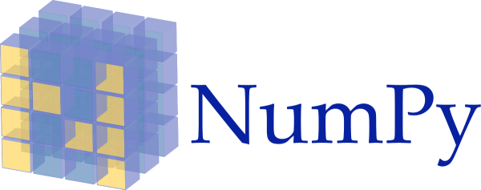
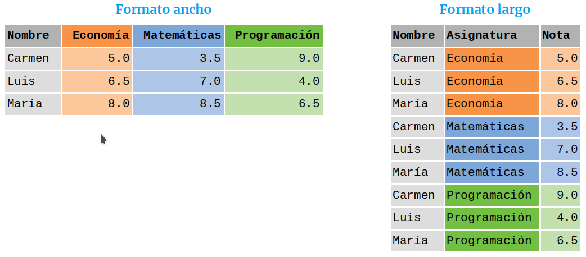
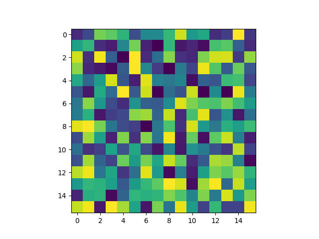
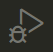

Python es un lenguaje de programación de alto nivel multiparadigma que permite:
Fue creado por Guido van Rossum en 1990 aunque actualmente es desarrollado y mantenido por la Python Software Foundation
Se ejecuta cada instrucción que introduce el usuario de manera interactiva.
> python
>>> name = "Alf"
>>> print("Hola ", name)
Hola Alf
Se leen y se ejecutan una a una todas las instrucciones del fichero.
# Fichero hola.py
name = "Alf"
print("Hola ", name)
> python hola.py
Hola Alf
También se puede hacer el fichero ejecutable indicando en la primera línea la ruta hasta el intérprete de Python.
#!/usr/bin/python3
name = "Alf"
print("Hola", name)
> chmod +x hola.py
> ./hola.py
Hola Alf
# Fichero hola.py
name = "Alf"
print("Hola " + name)
> python -O -m py_compile hola.py
> python __pycache__/hola.cpython-37.pyc
Hola Alf
Hay distintos paquetes que permiten compilar a un ejecutable del sistema operativo usado, por ejemplo pyinstaller.
> conda install pyinstaller
> pyinstaller hola.py
> ./dist/hola/hola
Hola Alf
True y False que representan los valores lógicos verdadero y falso respectivamente.Estos datos son inmutables, es decir, su valor es constante y no puede cambiar.
type())La clase a la que pertenece un dato se obtiene con el comando type()
>>> type(1)
<class 'int'>
>>> type("Hola")
<class 'str'>
>>> type([1, "dos", [3, 4], True])
<class 'list'>
>>>type({'pi':3.1416, 'e':2.718})
<class 'dict'>
>>>type((1, 'dos', 3))
<class 'tuple'>
int y float)Secuencia de dígitos (pueden incluir el - para negativos y el . para decimales) que representan números.
Pueden ser enteros (int) o reales (float).
>>> type(1)
<class 'int'>
>>> type(-2)
<class 'int'>
>>> type(2.3)
<class 'float'>
+ (suma), - (resta), * (producto), / (cociente), // (cociente división entera), % (resto división entera), ** (potencia).Orden de prioridad de evaluación:
| 1 | Funciones predefinidas |
| 2 | Potencias |
| 3 | Productos y cocientes |
| 4 | Sumas y restas |
Se puede saltar el orden de evaluación utilizando paréntesis ( ).
>>> 2+3
5
>>> 5*-2
-10
>>> 5/2
2.5
>>> 5//2
2
>>> (2+3)**2
25
Devuelven un valor lógico o booleano.
== (igual que), > (mayor que), < (menor que), >= (mayor o igual que), <= (menor o igual que), != (distinto de).>>> 3==3
True
>>> 3.1<=3
False
>>> -1!=1
True
str)Secuencia de caracteres alfanuméricos que representan texto. Se escriben entre comillas sencillas ’ o dobles ".
'Python'
"123"
'True'
# Cadena vacía
''
# Cadena con un espacio en blanco
' '
# Cambio de línea
'\n'
# Tabulador
'\t'
Cada carácter tiene asociado un índice que permite acceder a él.
| Cadena | P |
y |
t |
h |
o |
n |
|---|---|---|---|---|---|---|
| Índice positivo | 0 | 1 | 2 | 3 | 4 | 5 |
| Índice negativo | -6 | -5 | -4 | -3 | -2 | -1 |
c[i] devuelve el carácter de la cadena c con el índice i.El índice del primer carácter de la cadena es 0.
También se pueden utilizar índices negativos para recorrer la cadena del final al principio.
El índice del último carácter de la cadena es -1.
>>> 'Python'[0]
'P'
>>> 'Python'[1]
'y'
>>> 'Python'[-1]
'n'
>>> 'Python'[6]
Traceback (most recent call last):
File "<stdin>", line 1, in <module>
IndexError: string index out of range
c[i:j:k] : Devuelve la subcadena de c desde el carácter con el índice i hasta el carácter anterior al índice j, tomando caracteres cada k.>>> 'Python'[1:4]
'yth'
>>> 'Python'[1:1]
''
>>> 'Python'[2:]
'thon'
>>> 'Python'[:-2]
'Pyth'
>>> 'Python'[:]
'Python'
>>> 'Python'[0:6:2]
'Pto'
c1 + c2 : Devuelve la cadena resultado de concatenar las cadenas c1 y c2.c * n : Devuelve la cadena resultado de concatenar n copias de la cadena c.c1 in c2 : Devuelve True si c1 es una cadena concenida en c2 y False en caso contrario.c1 not in c2 : Devuelve True si c1 es una cadena no concenida en c2 y False en caso contrario.>>> 'Me gusta ' + 'Python'
'Me gusta Python'
>>> 'Python' * 3
'PythonPythonPython'
>>> 'y' in 'Python'
True
>>> 'tho' in 'Python'
True
>>> 'to' not in 'Python'
True
c1 == c2 : Devuelve True si la cadena c1 es igual que la cadena c2 y False en caso contrario.c1 > c2 : Devuelve True si la cadena c1 sucede a la cadena c2 y False en caso contrario.c1 < c2 : Devuelve True si la cadena c1 antecede a la cadena c2 y False en caso contrario.c1 >= c2 : Devuelve True si la cadena c1 sucede o es igual a la cadena c2 y False en caso contrario.c1 <= c2 : Devuelve True si la cadena c1 antecede o es igual a la cadena c2 y False en caso contrario.c1 != c2 : Devuelve True si la cadena c1 es distinta de la cadena c2 y False en caso contrario.Utilizan el orden establecido en el código ASCII.
>>> 'Python' == 'python'
False
>>> 'Python' < 'python'
True
>>> 'a' > 'Z'
True
>>> 'A' >= 'Z'
False
>>> '' < 'Python'
True
len(c) : Devuelve el número de caracteres de la cadena c.min(c) : Devuelve el carácter menor de la cadena c.max(c) : Devuelve el carácter mayor de la cadena c.c.upper() : Devuelve la cadena con los mismos caracteres que la cadena c pero en mayúsculas.c.lower() : Devuelve la cadena con los mismos caracteres que la cadena c pero en minúsculas.c.title() : Devuelve la cadena con los mismos caracteres que la cadena c con el primer carácter en mayúsculas y el resto en minúsculas.c.split(delimitador) : Devuelve la lista formada por las subcadenas que resultan de partir la cadena c usando como delimitador la cadena delimitador.
Si no se especifica el delimitador utiliza por defecto el espacio en blanco.>>> len('Python')
6
>>> min('Python')
'P'
>>> max('Python')
'y'
>>> 'Python'.upper()
'PYTHON'
>>> 'A,B,C'.split(',')
['A', 'B', 'C']
>>> 'I love Python'.split()
['I', 'love', 'Python']
format())c.format(valores): Devuelve la cadena c tras sustituir los valores de la secuencia valores en los marcadores de posición de c. Los marcadores de posición se indican mediante llaves {} en la cadena c, y el reemplazo de los valores se puede realizar por posición, indicando en número de orden del valor dentro de las llaves, o por nombre, indicando el nombre del valor, siempre y cuando los valores se pasen con el formato nombre = valor.>>> 'Un {} vale {} {}'.format('€', 1.12, '$')
'Un € vale 1.12 $'
>>> 'Un {2} vale {1} {0}'.format('€', 1.12, '$')
'Un $ vale 1.12 €'
>>> 'Un {moneda1} vale {cambio} {moneda2}'.format(moneda1 = '€', cambio = 1.12, moneda2 = '$')
'Un € vale 1.12 $'
format())Los marcadores de posición, a parte de indicar la posición de los valores de reemplazo, pueden indicar también el formato de estos. Para ello se utiliza la siguiente sintaxis:
{:n} : Alinea el valor a la izquierda rellenando con espacios por la derecha hasta los n caracteres.{:>n} : Alinea el valor a la derecha rellenando con espacios por la izquierda hasta los n caracteres.{:^n} : Alinea el valor en el centro rellenando con espacios por la izquierda y por la derecha hasta los n caracteres.{:nd} : Formatea el valor como un número entero con n caracteres rellenando con espacios blancos por la izquierda.{:n.mf} : Formatea el valor como un número real con un tamaño de n caracteres (incluído el separador de decimales) y m cifras decimales, rellenando con espacios blancos por la izquierda.format())>>> 'Hoy es {:^10}, mañana {:10} y pasado {:>10}'.format('lunes', 'martes', 'miércoles')
'Hoy es lunes , mañana martes y pasado miércoles'
>>> 'Cantidad {:5d}'.format(12)'
'Cantidad 12'
>>> 'Pi vale {:8.4f}'.format(3.141592)
'Pi vale 3.1416'
bool)Contiene únicamente dos elementos True y False que representan los valores lógicos verdadero y falso respectivamente.
False tiene asociado el valor 0 y True tiene asociado el valor 1.
== (igual que), > (mayor), < (menor), >= (mayor o igual que), <= (menor o igual que), != (distinto de).not b (negación) : Devuelve True si el dato booleano b es False , y False en caso contrario.b1 and b2 : Devuelve True si los datos booleanos b1 y b2 son True, y False en caso contrario.b1 or b2 : Devuelve True si alguno de los datos booleanos b1 o b2 son True, y False en caso contrario.x |
y |
not x |
x and y |
x or y |
|---|---|---|---|---|
False |
False |
True |
False |
False |
False |
True |
True |
False |
True |
True |
False |
False |
False |
True |
True |
True |
False |
True |
True |
>>> not True
False
>>> False or True
True
>>> True and False
False
>>> True and True
True
Las siguientes funciones convierten un dato de un tipo en otro, siempre y cuando la conversión sea posible.
int() convierte a entero.int('12') 12int(True) 1int('c') Errorfloat() convierte a real.float('3.14') 3.14float(True) 1.0float('III') Errorstr() convierte a cadena.str(3.14) '3.14'str(True) 'True'bool() convierte a lógico.bool('0') Falsebool('3.14') Truebool('') Falsebool('Hola') TrueUna variable es un identificador ligado a algún valor.
Reglas para nombrarlas:
A diferencia de otros lenguajes no tienen asociado un tipo y no es necesario declararlas antes de usarlas (tipado dinámico).
Para asignar un valor a una variable se utiliza el operador = y para borrar una variable se utiliza la instrucción del.
lenguaje = 'Python'
x = 3.14
y = 3 + 2
# Asignación múltiple
a1, a2 = 1, 2
# Intercambio de valores
a, b = b, a
# Incremento (equivale a x = x + 2)
x += 2
# Decremento (equivale a x = x - 1)
x -= 1
# Valor no definido
x = None
del x
input())Para asignar a una variable un valor introducido por el usuario en la consola se utiliza la instrucción
input(mensaje) : Muestra la cadena mensaje por la terminal y devuelve una cadena con la entrada del usuario.
El valor devuelto siempre es una cadena, incluso si el usuario introduce un dato numérico.
>>> language = input('¿Cuál es tu lenguaje favorito? ')
¿Cuál es tu lenguaje favorito? Python
>>> language
'Python'
>>> age = input('¿Cuál es tu edad? ')
¿Cuál es tu edad? 20
>>> age
'20'
print())Para mostrar un dato por la terminal se utiliza la instrucción
print(dato1, ..., sep=' ', end='\n', file=sys.stdout)
donde
dato1, ... son los datos a imprimir y pueden indicarse tantos como se quieran separados por comas.sep establece el separador entre los datos, que por defecto es un espacio en blanco ' '.end indica la cadena final de la impresión, que por defecto es un cambio de línea \n.file indica la dirección del flujo de salida, que por defecto es la salida estándar sys.stdout.print())>>> print('Hola')
Hola
>>> name = 'Alf'
>>> print('Hola', name)
Hola Alf
>>> print('El valor de pi es', 3.1415)
El valor de pi es 3.1415
>>> print('Hola', name, sep='')
HolaAlf
>>> print('Hola', name, end='!\n')
Hola Alf!
if)
if condición1:
bloque código
elif condición2:
bloque código
…
else:
bloque código
Evalúa la expresión lógica condición1 y ejecuta el primer bloque de código si es True; si no, evalúa la siguientes condiciones hasta llegar a la primera que es True y ejecuta el bloque de código asociado. Si ninguna condición es True ejecuta el bloque de código después de else:.
Pueden aparecer varios bloques elif pero solo uno else al final.
Los bloques de código deben estar indentados por 4 espacios.
La instrucción condicional permite evaluar el estado del programa y tomar decisiones sobre qué código ejecutar en función del mismo.
>>> edad = 14
>>> if edad <= 18 :
... print('Menor')
... elif edad > 65:
... print('Jubilado')
... else:
... print('Activo')
...
Menor
>>> age = 20
>>> if edad <= 18 :
... print('Menor')
... elif edad > 65:
... print('Jubilado')
... else:
... print('Activo')
...
Activo
while)
while condición:
bloque código
Repite la ejecución del bloque de código mientras la expresión lógica condición sea cierta.
Se puede interrumpir en cualquier momento la ejecución del bloque de código con la instrucción break.
El bloque de código debe estar indentado por 4 espacios.
>>> # Pregunta al usuario por un número hasta que introduce 0.
>>> num = None
>>> while num != 0:
... num = int(input('Introduce un número: '))
...
Introduce un número: 2
Introduce un número: 1
Introduce un número: 0
>>>
Alternativa:
>>> # Pregunta al usuario por un número hasta que introduce 0.
>>> while True:
... num = int(input('Introduce un número: '))
... if num == 0:
... break
...
Introduce un número: 2
Introduce un número: 1
Introduce un número: 0
>>>
for)
for i in secuencia:
bloque código
Repite la ejecución del bloque de código para cada elemento de la secuencia secuencia, asignado dicho elemento a i en cada repetición.
Se puede interrumpir en cualquier momento la ejecución del bloque de código con la instrucción break o saltar la ejecución para un determinado elemento de la secuencia con la instrucción continue.
El bloque de código debe estar indentado por 4 espacios.
Se utiliza fundamentalmente para recorrer colecciones de objetos como cadenas, listas, tuplas o diccionarios.
A menudo se usan con la instrucción range:
range(fin) : Genera una secuencia de números enteros desde 0 hasta fin-1.range(inicio, fin, salto) : Genera una secuencia de números enteros desde inicio hasta fin-1 con un incremento de salto.>>> palabra = 'Python'
>>> for letra in palabra:
... print(letra)
...
P
y
t
h
o
n
>>> for i in range(1, 10, 2):
... print(i, end=", ")
...
1, 3, 5, 7, 9, >>>
Una lista es una secuencias ordenadas de objetos de distintos tipos.
Se construyen poniendo los elementos entre corchetes [ ] separados por comas.
Se caracterizan por:
# Lista vacía
>>> type([])
<class 'list'>
# Lista con elementos de distintos tipos
>>> [1, "dos", True]
# Listas anidadas
>>> [1, [2, 3], 4]
list()Otra forma de crear listas es mediante la función list().
list(c) : Crea una lista con los elementos de la secuencia o colección c.Se pueden indicar los elementos separados por comas, mediante una cadena, o mediante una colección de elementos iterable.
>>> list()
[]
>>> list(1, 2, 3)
[1, 2, 3]
>>> list("Python")
['P', 'y', 't', 'h', 'o', 'n']
Se utilizan los mismos operadores de acceso que para cadenas de caracteres.
l[i] : Devuelve el elemento de la lista l con el índice i.El índice del primer elemento de la lista es 0.
>>> a = ['P', 'y', 't', 'h', 'o', 'n']
>>> a[0]
'P'
>>> a[5]
'n'
>>> a[6]
Traceback (most recent call last):
File "<stdin>", line 1, in <module>
IndexError: list index out of range
>>> a[-1]
'n'
l[i:j:k] : Devuelve la sublista desde el elemento de l con el índice i hasta el elemento anterior al índice j, tomando elementos cada k.>>> a = ['P', 'y', 't', 'h', 'o', 'n']
>>> a[1:4]
['y', 't', 'h']
>>> a[1:1]
[]
>>> a[:-3]
['y', 't', 'h']
>>> a[:]
['P', 'y', 't', 'h', 'o', 'n']
>>> a[0:6:2]
['P', 't', 'o']
len(l) : Devuelve el número de elementos de la lista l.min(l) : Devuelve el mínimo elemento de la lista l siempre que los datos sean comparables.max(l) : Devuelve el máximo elemento de la lista l siempre que los datos sean comparables.sum(l) : Devuelve la suma de los elementos de la lista l, siempre que los datos se puedan sumar.dato in l : Devuelve True si el dato dato pertenece a la lista l y False en caso contrario.l.index(dato) : Devuelve la posición que ocupa en la lista l el primer elemento con valor dato.l.count(dato) : Devuelve el número de veces que el valor dato está contenido en la lista l.all(l) : Devuelve True si todos los elementos de la lista l son True y False en caso contrario.any(l) : Devuelve True si algún elemento de la lista l es True y False en caso contrario.>>> a = [1, 2, 2, 3]
>>> len(a)
4
>>> min(a)
1
>>> max(a)
3
>>> sum(a)
8
>>> 3 in a
True
>>> a.index(2)
1
>>> a.count(2)
2
>>> all(a)
True
>>> any([0, False, 3<2])
False
l1 + l2 : Crea una nueva lista concatenan los elementos de la listas l1 y l2.l.append(dato) : Añade dato al final de la lista l.l.extend(sequencia) : Añade los datos de sequencia al final de la lista l.l.insert(índice, dato) : Inserta dato en la posición índice de la lista l y desplaza los elementos una posición a partir de la posición índice.l.remove(dato) : Elimina el primer elemento con valor dato en la lista l y desplaza los que están por detrás de él una posición hacia delante.l.pop([índice]) : Devuelve el dato en la posición índice y lo elimina de la lista l, desplazando los elementos por detrás de él una posición hacia delante.l.sort() : Ordena los elementos de la lista l de acuerdo al orden predefinido, siempre que los elementos sean comparables.l.reverse() : invierte el orden de los elementos de la lista l.>>> a = [1, 3]
>>> b = [2 , 4, 6]
>>> a.append(5)
>>> a
[1, 3, 5]
>>> a.remove(3)
>>> a
[1, 5]
>>> a.insert(1, 3)
>>> a
[1, 3, 5]
>>> b.pop()
6
>>> c = a + b
>>> c
[1, 3, 5, 2, 4]
>>> c.sort()
>>> c
[1, 2, 3, 4, 5]
>>> c.reverse()
>>> c
[5, 4, 3, 2, 1]
Existen dos formas de copiar listas:
l1 = l2: Asocia la la variable l1 la misma lista que tiene asociada la variable l2, es decir, ambas variables apuntan a la misma dirección de memoria. Cualquier cambio que hagamos a través de l1 o l2 afectará a la misma lista.l1 = list(l2): Crea una copia de la lista asociada a l2 en una dirección de memoria diferente y se la asocia a l1. Las variables apuntan a direcciones de memoria diferentes que contienen los mismos datos. Cualquier cambio que hagamos a través de l1 no afectará a la lista de l2 y viceversa.>>> a = [1, 2, 3]
>>> # copia por referencia
>>> b = a
>>> b
[1, 2, 3]
>>> b.remove(2)
>>> b
[1, 3]
>>> a
[1, 3]
>>> a = [1, 2, 3]
>>> # copia por referencia
>>> b = list(a)
>>> b
[1, 2, 3]
>>> b.remove(2)
>>> b
[1, 3]
>>> a
[1, 2, 3]
Una tupla es una secuencias ordenadas de objetos de distintos tipos.
Se construyen poniendo los elementos entre corchetes ( ) separados por comas.
Se caracterizan por:
Se usan habitualmente para representar colecciones de datos una determinada estructura semántica, como por ejemplo un vector o una matriz.
# Tupla vacía
>>> type(())
<class 'tuple'>
# Tupla con elementos de distintos tipos
>>> (1, "dos", True)
# Vector
>>> (1, 2, 3)
# Matriz
>>> ((1, 2, 3), (4, 5, 6))
tuple()Otra forma de crear tuplas es mediante la función tuple().
tuple(c) : Crea una tupla con los elementos de la secuencia o colección c.Se pueden indicar los elementos separados por comas, mediante una cadena, o mediante una colección de elementos iterable.
>>> tuple()
()
>>> tuple(1, 2, 3)
(1, 2, 3)
>>> tuple("Python")
('P', 'y', 't', 'h', 'o', 'n')
>>> tuple([1, 2, 3])
(1, 2, 3)
El acceso a los elementos de una tupla se realiza del mismo modo que en las listas. También se pueden obtener subtuplas de la misma manera que las sublistas.
Las operaciones de listas que no modifican la lista también son aplicables a las tuplas.
>>> a = (1, 2, 3)
>>> a[1]
2
>>> len(a)
3
>>> a.index(3)
2
>>> 0 in a
False
>>> b = ((1, 2, 3), (4, 5, 6))
>>> b[1]
(4, 5, 6)
>>> b[1][2]
6
Un diccionario es una colección de pares formados por una clave y un valor asociado a la clave.
Se construyen poniendo los pares entre llaves { } separados por comas, y separando la clave del valor con dos puntos :.
Se caracterizan por:
# Diccionario vacío
type({})
<class 'dict'>
# Diccionario con elementos de distintos tipos
{'nombre':'Alfredo', 'despacho': 218, 'email':'asalber@ceu.es'}
# Diccionarios anidados
{'nombre_completo':{'nombre': 'Alfredo', 'Apellidos': 'Sánchez Alberca'}}
d[clave] devuelve el valor del diccionario d asociado a la clave clave. Si en el diccionario no existe esa clave devuelve un error.d.get(clave, valor) devuelve el valor del diccionario d asociado a la clave clave. Si en el diccionario no existe esa clave devuelve valor, y si no se especifica un valor por defecto devuelve None.>>> a = {'nombre':'Alfredo', 'despacho': 218, 'email':'asalber@ceu.es'}
>>> a['nombre']
'Alfredo'
>>> a['despacho'] = 210
>>> a
{'nombre':'Alfredo', 'despacho': 218, 'email':'asalber@ceu.es'}
>>> a.get('email')
'asalber@ceu.es'
>>> a.get('universidad', 'CEU')
'CEU'
len(d) : Devuelve el número de elementos del diccionario d.min(d) : Devuelve la mínima clave del diccionario d siempre que las claves sean comparables.max(d) : Devuelve la máxima clave del diccionario d siempre que las claves sean comparables.sum(d) : Devuelve la suma de las claves del diccionario d, siempre que las claves se puedan sumar.clave in d : Devuelve True si la clave clave pertenece al diccionario d y False en caso contrario.d.keys() : Devuelve un iterador sobre las claves de un diccionario.d.values() : Devuelve un iterador sobre los valores de un diccionario.d.items() : Devuelve un iterador sobre los pares clave-valor de un diccionario.>>> a = {'nombre':'Alfredo', 'despacho': 218, 'email':'asalber@ceu.es'}
>>> len(a)
3
>>> min(a)
'despacho'
>>> 'email' in a
True
>>> a.keys()
dict_keys(['nombre', 'despacho', 'email'])
>>> a.values()
dict_values(['Alfredo', 218, 'asalber@ceu.es'])
>>> a.items()
dict_items([('nombre', 'Alfredo'), ('despacho', 218), ('email', 'asalber@ceu.es')])
d[clave] = valor : Añade al diccionario d el par formado por la clave clave y el valor valor.d.update(d2). Añade los pares del diccionario d2 al diccionario d.d.pop(clave, alternativo) : Devuelve del valor asociado a la clave clave del diccionario d y lo elimina del diccionario. Si la clave no está devuelve el valor alternativo.d.popitem() : Devuelve la tupla formada por la clave y el valor del último par añadido al diccionario d y lo elimina del diccionario.del d[clave] : Elimina del diccionario d el par con la clave clave.d.clear() : Elimina todos los pares del diccionario d de manera que se queda vacío.>>> a = {'nombre':'Alfredo', 'despacho': 218, 'email':'asalber@ceu.es'}
>>> a['universidad'] = 'CEU'
>>> a
{'nombre': 'Alfredo', 'despacho': 218, 'email': 'asalber@ceu.es', 'universidad': 'CEU'}
>>> a.pop('despacho')
218
>>> a
{'nombre': 'Alfredo', 'email': 'asalber@ceu.es', 'universidad': 'CEU'}
>>> a.popitem()
('universidad', 'CEU')
>>> a
{'nombre': 'Alfredo', 'email': 'asalber@ceu.es'}
>>> del a['email']
>>> a
{'nombre': 'Alfredo'}
>>> a.clear()
>>> a
{}
Existen dos formas de copiar diccionarios:
d1 = d2: Asocia la la variable d1 el mismo diccionario que tiene asociado la variable d2, es decir, ambas variables apuntan a la misma dirección de memoria. Cualquier cambio que hagamos a través de l1 o l2 afectará al mismo diccionario.d1 = list(d2): Crea una copia del diccionario asociado a d2 en una dirección de memoria diferente y se la asocia a d1. Las variables apuntan a direcciones de memoria diferentes que contienen los mismos datos. Cualquier cambio que hagamos a través de l1 no afectará al diccionario de l2 y viceversa.>>> a = {1:'A', 2:'B', 3:'C'}
>>> # copia por referencia
>>> b = a
>>> b
{1:'A', 2:'B', 3:'C'}
>>> b.pop(2)
>>> b
{1:'A', 3:'C'}
>>> a
{1:'A', 3:'C'}
>>> a = {1:'A', 2:'B', 3:'C'}
>>> # copia por referencia
>>> b = dict(a)
>>> b
{1:'A', 2:'B', 3:'C'}
>>> b.pop(2)
>>> b
{1:'A', 3:'C'}
>>> a
{1:'A', 2:'B', 3:'C'}
def)Una función es un bloque de código que tiene asociado un nombre, de manera que cada vez que se quiera ejecutar el bloque de código basta con invocar el nombre de la función.
Para declarar una función se utiliza la siguiente sintaxis:
def <nombre-funcion> (<parámetros>):
bloque código
return <objeto>
>>> def bienvenida():
... print('¡Bienvenido a Python!')
... return
...
>>> type(bienvenida)
<class 'function'>
>>> bienvenida()
¡Bienvenido a Python!
Una función puede recibir valores cuando se invoca a través de unas variables conocidas como parámetros que se definen entre paréntesis en la declaración de la función. En el cuerpo de la función se pueden usar estos parámetros como si fuesen variables.
Los valores que se pasan a la función en una invocación concreta de ella se conocen como argumentos y se asocian a los parámetros de la declaración de la función.
>>> def bienvenida(nombre):
... print('¡Bienvenido a Python', nombre + '!')
... return
...
>>> bienvenida('Alf')
¡Bienvenido a Python Alf!
Los valores que se pasan a la función en una llamada o invocación concreta de ella se conocen como argumentos y se asocian a los parámetros de la declaración de la función.
Los argumentos se pueden indicar de dos formas:
parametro = argumento.>>> def bienvenida(nombre, apellido):
... print('¡Bienvenido a Python', nombre, apellido + '!')
... return
...
>>> bienvenida('Alfredo', 'Sánchez)
¡Bienvenido a Python Alfredo Sánchez!
>>> bienvenida(apellido = 'Sánchez', nombre = 'Alfredo')
¡Bienvenido a Python Alfredo Sánchez!
Una función puede devolver un objeto de cualquier tipo tras su invocación. Para ello el objeto a devolver debe escribirse detrás de la palabra reservada return. Si no se indica ningún objeto, la función no devolverá nada.
>>> def area_triangulo(base, altura):
... return base * altura / 2
...
>>> area_triangulo(2, 3)
3
>>> area_triangulo(4, 5)
10
En la definición de una función se puede asignar a cada parámetro un argumento por defecto, de manera que si se invoca la función sin proporcionar ningún argumento para ese parámetro, se utiliza el argumento por defecto.
>>> def bienvenida(nombre, lenguaje = 'Python'):
... print('¡Bienvenido a', lenguaje, nombre + '!')
... return
...
>>> bienvenida('Alf')
¡Bienvenido a Python Alf!
>>> bienvenida('Alf', 'Java')
¡Bienvenido a Java Alf!
Por último, es posible pasar un número variable de argumentos a un parámetro. Esto se puede hacer de dos formas:
*parametro: Se antepone un asterisco al nombre del parámetro y en la invocación de la función se pasa el número variable de argumentos separados por comas. Los argumentos se guardan en una lista que se asocia al parámetro.**parametro: Se anteponen dos asteriscos al nombre del parámetro y en la invocación de la función se pasa el número variable de argumentos por pares nombre = valor, separados por comas. Los argumentos se guardan en un diccionario que se asocia al parámetro.>>> def menu(*platos):
... print('Hoy tenemos: ', end='')
... for plato in platos:
... print(plato, end=', ')
... return
...
>>> menu('pasta', 'pizza', 'ensalada')
Hoy tenemos: pasta, pizza, ensalada,
Los parámetros y las variables declaradas dentro de una función son de ámbito local, mientras que las definidas fuera de ella son de ámbito ámbito global.
Tanto los parámetros como las variables del ámbito local de una función sólo están accesibles durante la ejecución de la función, es decir, cuando termina la ejecución de la función estas variables desaparecen y no son accesibles desde fuera de la función.
>>> def bienvenida(nombre):
... lenguaje = 'Python'
... print('¡Bienvenido a', lenguaje, nombre + '!')
... return
...
>>> bienvenida('Alf')
¡Bienvenido a Python Alf!
>>> lenguaje
Traceback (most recent call last):
File "<stdin>", line 1, in <module>
NameError: name 'lenguaje' is not defined
Si en el ámbito local de una función existe una variable que también existe en el ámbito global, durante la ejecución de la función la variable global queda eclipsada por la variable local y no es accesible hasta que finaliza la ejecución de la función.
>>> lenguaje = 'Java'
>>> def bienvenida():
... lenguaje = 'Python'
... print('¡Bienvenido a', lenguaje + '!')
... return
...
>>> bienvenida()
¡Bienvenido a Python!
>>> print(lenguaje)
Java
En Python el paso de argumentos a una función es siempre por referencia, es decir, se pasa una referencia al objeto del argumento, de manera que cualquier cambio que se haga dentro de la función mediante el parámetro asociado afectará al objeto original, siempre y cuando este sea mutable.
>>> primer_curso = ['Matemáticas', 'Física']
>>> def añade_asignatura(curso, asignatura):
... curso.append(asignatura)
... return
...
>>> añade_asignatura(primer_curso, 'Química')
>>> print(primer_curso)
['Matemáticas', 'Física', 'Química']
Una práctica muy recomendable cuando se define una función es describir lo que la función hace en un comentario.
En Python esto se hace con un docstring que es un tipo de comentario especial se hace en la línea siguiente al encabezado de la función entre tres comillas simples ''' o dobles """.
Después se puede acceder a la documentación de la función con la función help(<nombre-función>).
>>> def area_triangulo(base, altura):
... """Función que calcula el área de un triángulo.
...
... Parámetros:
... - base: La base del triángulo.
... - altura: La altura del triángulo.
... Resultado:
... El área del triángulo con la base y altura especificadas.
... """
... return base * altura / 2
...
>>> help(area_triangulo)
area_triangulo(base, altura)
Función que calcula el área de un triángulo.
Parámetros:
- base: La base del triángulo.
- altura: La altura del triángulo.
Resultado:
El área del triángulo con la base y altura especificadas.
Una función recursiva es una función que en su cuerpo contiene una llama a si misma.
La recursión es una práctica común en la mayoría de los lenguajes de programación ya que permite resolver las tareas recursivas de manera más natural.
Para garantizar el final de una función recursiva, las sucesivas llamadas tienen que reducir el grado de complejidad del problema, hasta que este pueda resolverse directamente sin necesidad de volver a llamar a la función.
>>> def factorial(n):
... if n == 0:
... return 1
... else:
... return n * factorial(n-1)
...
>>> f(5)
120
Una función recursiva puede invocarse a si misma tantas veces como quiera en su cuerpo.
>>> def fibonacci(n):
... if n <= 1:
... return n
... else:
... return fibonacci(n - 1) + fibonacci(n - 2)
...
>>> fibonacci(6)
8
Aunque la recursión permite resolver las tareas recursivas de forma más natural, hay que tener cuidado con ella porque suele consumir bastante memoria, ya que cada llamada a la función crea un nuevo ámbito local con las variables y los parámetros de la función.
En muchos casos es más eficiente resolver la tarea recursiva de forma iterativa usando bucles.
>>> def fibonacci(n):
... a, b = 0, 1
... for i in range(n):
... a, b = b, a + b
... return a
...
>>> fibonacci(6)
8
En Python las funciones son objetos de primera clase, es decir, que pueden pasarse como argumentos de una función, al igual que el resto de los tipos de datos.
>>> def aplica(funcion, argumento):
... return funcion(argumento)
...
>>> def cuadrado(n):
... return n*n
...
>>> def cubo(n):
... return n**3
...
>>> aplica(cuadrado, 5)
25
>>> aplica(cubo, 5)
125
lambda)Existe un tipo especial de funciones que no tienen nombre asociado y se conocen como funciones anónimas o funciones lambda.
La sintaxis para definir una función anónima es
lambda <parámetros> : <expresión>
Estas funciones se suelen asociar a una variable o parámetro desde la que hacer la llamada.
>>> area = lambda base, altura : base * altura
>>> area(4, 5)
10
map)map(f, c) : Devuelve una objeto iterable con los resultados de aplicar la función f a los elementos de la colección c. Si la función f requiere n argumentos entonces deben pasarse n colecciones con los argumentos. Para convertir el objeto en una lista, tupla o diccionario hay que aplicar explícitamente las funciones list(), tuple() o dic() respectivamente.
>>> def cuadrado(n):
... return n * n
...
>>> list(map(cuadrado, [1, 2, 3])
[1, 4, 9]
>>> def rectangulo(a, b):
... return a * b
...
>>> tuple(map(rectangulo, (1, 2, 3), (4, 5, 6)))
(4, 10, 18)
filter(f, c) : Devuelve una objeto iterable con los elementos de la colección c que devuelven True al aplicarles la función f. Para convertir el objeto en una lista, tupla o diccionario hay que aplicar explícitamente las funciones list(), tuple() o dic() respectivamente.
f debe ser una función que recibe un argumento y devuelve un valor booleano.
>>> def par(n):
... return n % 2 == 0
...
>>> list(filter(par, range(10))
[0, 2, 4, 6, 8]
zip)zip(c1, c2, ...) : Devuelve un objeto iterable cuyos elementos son tuplas formadas por los elementos que ocupan la misma posición en las colecciones c1, c2, etc. El número de elementos de las tuplas es el número de colecciones que se pasen. Para convertir el objeto en una lista, tupla o diccionario hay que aplicar explícitamente las funciones list(), tuple() o dic() respectivamente.
>>> asignaturas = ['Matemáticas', 'Física', 'Química', 'Economía']
>>> notas = [6.0, 3.5, 7.5, 8.0]
>>> list(zip(asignaturas, notas))
[('Matemáticas', 6.0), ('Física', 3.5), ('Química', 7.5), ('Economía', 8.0)]
>>> dict(zip(asignaturas, notas[:3]))
{'Matemáticas': 6.0, 'Física': 3.5, 'Química': 7.5}
reduce)reduce(f, l) : Aplicar la función f a los dos primeros elementos de la secuencia l. Con el valor obtenido vuelve a aplicar la función f a ese valor y el siguiente de la secuencia, y así hasta que no quedan más elementos en la lista. Devuelve el valor resultado de la última aplicación de la función f.
La función reduce está definida en el módulo functools.
>>> from functools import reduce
>>> def producto(n, m):
... return n * m
...
>>> reduce(producto, range(1, 5))
24
En muchas aplicaciones es habitual aplicar una función o realizar una operación con los elementos de una colección (lista, tupla o diccionario) y obtener una nueva colección de elementos transformados. Aunque esto se puede hacer recorriendo la secuencia con un bucle iterativo, y en programación funcional mediante la función map, Python incorpora un mecanismo muy potente que permite esto mismo de manera más simple.
[expresion
forvariableinlistaifcondicion]
Esta instrucción genera la lista cuyos elementos son el resultado de evaluar la expresión expresion, para cada valor que toma la variable variable, donde variable toma todos los valores de la lista lista que cumplen la condición condición.
>>> [x ** 2 for x in range(10)]
[0, 1, 4, 9, 16, 25, 36, 49, 64, 81]
>>> [x for x in range(10) if x % 2 == 0]
[0, 2, 4, 6, 8]
>>> [x ** 2 for x in range(10) if x % 2 == 0]
[0, 4, 16, 36, 64]
>>> notas = {'Carmen':5, 'Antonio':4, 'Juan':8, 'Mónica':9, 'María': 6, 'Pablo':3}
>>> [nombre for (nombre, nota) in notas.items() if nota >= 5]
['Carmen', 'Juan', 'Mónica', 'María']
{expresion-clave
:expresion-valorforvariablesinlistaifcondicion}
Esta instrucción genera el diccionario formado por los pares cuyas claves son el resultado de evaluar la expresión expresion-clave y cuyos valores son el resultado de evaluar la expresión expresion-valor, para cada valor que toma la variable variable, donde variable toma todos los valores de la lista lista que cumplen la condición condición.
>>> {palabra:len(palabra) for palabra in ['I', 'love', 'Python']}
{'I': 1, 'love': 4, 'Python': 6}
>>> notas = {'Carmen':5, 'Antonio':4, 'Juan':8, 'Mónica':9, 'María': 6, 'Pablo':3}
>>> {nombre: nota +1 for (nombre, nota) in notas.items() if nota >= 5])
{'Carmen': 6, 'Juan': 9, 'Mónica': 10, 'María': 7}
Hasta ahora hemos visto como interactuar con un programa a través del teclado (entrada de datos) y la terminal (salida), pero en la mayor parte de las aplicaciones reales tendremos que leer y escribir datos en ficheros.
Al utilizar ficheros para guardar los datos estos perdurarán tras la ejecución del programa, pudiendo ser consultados o utilizados más tarde.
Las operaciones más habituales con ficheros son:
Para crear un fichero nuevo se utiliza la instrucción
open(ruta, 'w') : Crea el fichero con la ruta ruta, lo abre en modo escritura (el argumento ‘w’ significa write) y devuelve un objeto que lo referencia.
Si el fichero indicado por la ruta ya existe en el sistema, se reemplazará por el nuevo.
Una vez creado el fichero, para escribir datos en él se utiliza el método
fichero.write(c) : Escribe la cadena c en el fichero referenciado por fichero.
>>> f = open('bienvenida.txt', 'w')
... f.write('¡Bienvenido a Python!')
Si en lugar de crear un fichero nuevo queremos añadir datos a un fichero existente se debe utilizar la instrucción
open(ruta, 'a') : Abre el fichero con la ruta ruta en modo añadir (el argumento ‘a’ significa append) y devuelve un objeto que lo referencia.
Una vez abierto el fichero, se utiliza el método de escritura anterior y los datos se añaden al final del fichero.
>>> f = open('bienvenida.txt', 'a')
... f.write('\n¡Hasta pronto!')
Para abrir un fichero en modo lectura se utiliza la instrucción
open(ruta, 'r') : Abre el fichero con la ruta ruta en modo lectura (el argumento ‘r’ significa read) y devuelve un objeto que lo referencia.
Una vez abierto el fichero, se puede leer todo el contenido del fichero o se puede leer línea a línea.
fichero.read() : Devuelve todos los datos contenidos en fichero como una cadena de caracteres.
fichero.readlines() : Devuelve una lista de cadenas de caracteres donde cada cadena es una linea del fichero referenciado por fichero.
>>> f = open('bienvenida.txt', 'r')
... print(f.read())
¡Bienvenido a Python!
¡Hasta pronto!
>>> f = open('bienvenida.txt', 'r')
... lineas = print(f.readlines())
>>> print(lineas)
['Bienvenido a Python!\n', '¡Hasta pronto!']
Para cerrar un fichero se utiliza el método
fichero.close() : Cierra el fichero referenciado por el objeto fichero.
Cuando se termina de trabajar con un fichero conviene cerrarlo, sobre todo si se abre en modo escritura, ya que mientras está abierto en este modo no se puede abrir por otra aplicación. Si no se cierra explícitamente un fichero, Python intentará cerrarlo cuando estime que ya no se va a usar más.
>>> f = open('bienvenida.txt'):
... print(f.read())
... f.close() # Cierre del fichero
...
¡Bienvenido a Python!
¡Hasta pronto!
Para renombra o borrar un fichero se utilizan funciones del módulo os.
os.rename(ruta1, ruta2) : Renombra y mueve el fichero de la ruta ruta1 a la ruta ruta2.
os.remove(ruta) : Borra el fichero de la ruta ruta.
Antes de borrar o renombra un directorio conviene comprobar que existe para que no se produzca un error. Para ello se utiliza la función
os.path.isfile(ruta) : Devuelve True si existe un fichero en la ruta ruta y False en caso contrario.
>>> import os
>>> f = 'bienvenida.txt'
>>> if os.path.isfile(f):
... os.rename(f, 'saludo.txt') # renombrado
... else:
... print('¡El fichero', f, 'no existe!')
...
>>> f = 'saludo.txt'
>>> if os.path.isfile(f):
... os.remove(f) # borrado
... else:
... print('¡El fichero', f, 'no existe!')
...
Para trabajar con directorios también se utilizan funciones del módulo os.
os.listdir(ruta) : Devuelve una lista con los ficheros y directiorios contenidos en la ruta ruta.
os.mkdir(ruta) : Crea un nuevo directorio en la ruta ruta.
os.chdir(ruta) : Cambia el directorio actual al indicado por la ruta ruta.
os.getcwd() : Devuelve una cadena con la ruta del directorio actual.
os.rmdir(ruta) : Borra el directorio de la ruta ruta, siempre y cuando esté vacío.
Para leer un fichero de internet hay que utilizar la función urlopen del módulo urllib.request.
urlopen(url) : Abre el fichero con la url especificada y devuelve un objeto del tipo fichero al que se puede acceder con los métodos de lectura de ficheros anteriores.
>>> from urllib import request
>>> f = request.urlopen('https://raw.githubusercontent.com/asalber/asalber.github.io/master/README.md')
>>> datos = f.read()
>>> print(datos)
b'Aprende con Alf\n===============\n\nEste es el repositorio del sitio web Aprende con Alf: http://aprendeconalf.es\n'
El fichero que se obtiene con la función urlopen está en formato binario y al leerlo se obtiene un objeto de tipo bytes con la sequencia de bytes del fichero. Para convertirlo en una cadena hay que decodificar el objeto, y para ello se utiliza la siguiente función:
b.decode(codificacion) : Devuelve la cadena que resulta de decodificar la secuencia de bytes b utilizando la codificación codificacion.Existen muchas codificaciones pero las más habituales son utf8 (normalmente en sistemas Mac y Linux) y latin1 para lenguas europeas en sistemas Windows. En el siguiente enlace se puede acceder a la lista de codificaciones
>>> from urllib import request
>>> f = request.urlopen('https://raw.githubusercontent.com/asalber/asalber.github.io/master/README.md')
>>> datos = f.read()
>>> print(datos.decode('utf-8'))
Aprende con Alf
===============
Este es el repositorio del sitio web Aprende con Alf: http://aprendeconalf.es
Python utiliza un objeto especial llamado excepción para controlar cualquier error que pueda ocurrir durante la ejecución de un programa.
Cuando ocurre un error durante la ejecución de un programa, Python crea una excepción. Si no se controla esta excepción la ejecución del programa se detiene y se muestra el error (traceback).
>>> print(1 / 0) # Error al intentar dividir por 0.
Traceback (most recent call last):
File "<stdin>", line 1, in <module>
ZeroDivisionError: division by zero
Los principales excepciones definidas en Python son:
TypeError : Ocurre cuando se aplica una operación o función a un dato del tipo inapropiado.ZeroDivisionError : Ocurre cuando se itenta dividir por cero.OverflowError : Ocurre cuando un cálculo excede el límite para un tipo de dato numérico.IndexError : Ocurre cuando se intenta acceder a una secuencia con un índice que no existe.KeyError : Ocurre cuando se intenta acceder a un diccionario con una clave que no existe.FileNotFoundError : Ocurre cuando se intenta acceder a un fichero que no existe en la ruta indicada.ImportError : Ocurre cuando falla la importación de un módulo.Consultar la documentaciónde Python para ver la lista de exepciones predefinidas.
try - except - else)Para evitar la interrución de la ejecución del programa cuando se produce un error, es posible controlar la exepción que se genera con la siguiente instrucción:
try:
bloque código 1
exceptexcepción:
bloque código 2
else:
bloque código 3
Esta instrucción ejecuta el primer bloque de código y si se produce un error que genera una excepción del tipo excepción entonces ejecuta el segundo bloque de código, mientras que si no se produce ningún error, se ejecuta el tercer bloque de código.
>>> def division(a, b):
... try:
... result = a / b
... except ZeroDivisionError:
... print('¡No se puede dividir por cero!')
... else:
... print(result)
...
>>> division(1, 0)
¡No se puede dividir por cero!
>>> division(1, 2)
0.5
>>> try:
... f = open('fichero.txt') # El fichero no existe
... except FileNotFoundError:
... print('¡El fichero no existe!')
... else:
... print(f.read())
¡El fichero no existe!
El código de un programa en Python puede reutilizarse en otro importándolo. Cualquier fichero con código de Python reutilizable se conoce como módulo o librería.
Los módulos suelen contener funciones reutilizables, pero también pueden definir variables con datos simples o compuestos (listas, diccionarios, etc), o cualquier otro código válido en Python.
Python permite importar un módulo completo o sólo algunas partes de él. Cuando se importa un módulo completo, el intérprete de Python ejecuta todo el código que contiene el módulo, mientras que si solo se importan algunas partes del módulo, solo se ejecutarán esas partes.
import)import M : Ejecuta el código que contiene M y crea una referencia a él, de manera que pueden invocarse un objeto o función f definida en él mediante la sintaxis M.f.
import M as N : Ejecuta el código que contiene M y crea una referencia a él con el nombre N, de manera que pueden invocarse un objeto o función f definida en él mediante la sintaxis N.f. Esta forma es similar a la anterior, pero se suele usar cuando el nombre del módulo es muy largo para utilizar un alias más corto.
from import)from M import f, g, ... : Ejecuta el código que contiene M y crea referencias a los objetos f, g, ..., de manera que pueden ser invocados por su nombre. De esta manera para invocar cualquiera de estos objetos no hace falta precederlos por el nombre del módulo, basta con escribir su nombre.
from M import * : Ejecuta el código que contiene M y crea referencias a todos los objetos públicos (aquellos que no empiezan por el carácter _) definidos en el módulo, de manera que pueden ser invocados por su nombre.
Cuando se importen módulos de esta manera hay que tener cuidado de que no haya coincidencias en los nombres de funciones, variables u otros objetos.
>>> import calendar
>>> print(calendar.month(2019, 4))
April 2019
Mo Tu We Th Fr Sa Su
1 2 3 4 5 6 7
8 9 10 11 12 13 14
15 16 17 18 19 20 21
22 23 24 25 26 27 28
29 30
>>> from math import *
>>> cos(pi)
-1.0
Python viene con una biblioteca de módulos predefinidos que no necesitan instalarse. Algunos de los más utilizados son:
Necesitan instalarse.
Para manejar fechas en Python se suele utilizar la librería datetime que incorpora los tipos de datos date, time y datetime para representar fechas y funciones para manejarlas. Algunas de las operaciones más habituales que permite son:
date, time o datetime.date, time o datetime en cadenas formateadas de acuerdo a diferentes formatos de fechas.date, time y datetimedate(año, mes, dia) : Devuelve un objeto de tipo date que representa la fecha con el año, mes y dia indicados.time(hora, minutos, segundos, microsegundos) : Devuelve un objeto de tipo time que representa un tiempo la hora, minutos, segundos y microsegundos indicados.datetime(año, mes, dia, hora, minutos, segundos, microsegundos) : Devuelve un objeto de tipo datetime que representa una fecha y hora con el año, mes, dia, hora, minutos, segundos y microsegundos indicados.from datetime import date, time, datetime
>>> date(2020, 12, 25)
datetime.date(2020, 12, 25)
>>> time(13,30,5)
datetime.time(13, 30, 5)
>>> datetime(2020, 12, 25, 13, 30, 5)
datetime.datetime(2020, 12, 25, 13, 30, 5)
>>> print(datetime(2020, 12, 25, 13, 30, 5))
2020-12-25 13:30:05
date.today() : Devuelve un objeto del tipo date la fecha del sistema en el momento en el que se ejecuta.datetime.now(): Devuelve un objeto del tipo datetime con la fecha y la hora del sistema en el momento exacto en el que se ejecuta.d.year : Devuelve el año de la fecha d, puede ser del tipo date o datetime.d.month : Devuelve el mes de la fecha d, que puede ser del tipo date o datetime.d.day : Devuelve el día de la fecha d, que puede ser del tipo date o datetime.d.weekday() : Devuelve el día de la semana de la fecha d, que puede serpuede ser del tipo date o datetime.t.hour : Devuelve las horas del tiempo t, que puede ser del tipo time o datetime.t.hour : Devuelve los minutos del tiempo t, que puede ser del tipo time o datetime.t.second : Devuelve los segundos del tiempo t, que puede ser del tipo time o datetime.t.microsecond : Devuelve los microsegundos del tiempo t, que puede ser del tipo time o datetime.>>> from datetime import date, time, datetime
>>> print(date.today())
2020-04-11
>>> dt = datetime.now()
>>> dt.year
2020
>>> dt.month
4
>>> dt.day
11
>>> dt.hour
22
>>> dt.minute
5
>>> dt.second
45
>>> dt.microsecond
1338
d.strftime(formato) : Devuelve la cadena que resulta de transformar la fecha d con el formato indicado en la cadena formato. La cadena formato puede contener los siguientes marcadores de posición: %Y (año completo), %y (últimos dos dígitos del año), %m (mes en número), %B (mes en palabra), %d (día), %A (día de la semana), %a (día de la semana abrevidado), %H (hora en formato 24 horas), %I (hora en formato 12 horas), %M (minutos), %S (segundos), %p (AM o PM), %C (fecha y hora completas), %x (fecha completa), %X (hora completa).>>> from datetime import date, time, datetime
>>> d = datetime.now()
>>> print(d.strftime('%d-%m-%Y'))
13-04-2020
>>> print(d.strftime('%A, %d %B, %y'))
Monday, 13 April, 20
>>> print(d.strftime('%H:%M:%S'))
20:55:53
>>> print(d.strftime('%H horas, %M minutos y %S segundos'))
20 horas, 55 minutos y 53 segundos
strptime(s, formato) : Devuelve el objeto de tipo date, time o datetime que resulta de convertir la cadena s de acuerdo al formato indicado en la cadena formato. La cadena formato puede contener los siguientes marcadores de posición: %Y (año completo), %y (últimos dos dígitos del año), %m (mes en número), %B (mes en palabra), %d (día), %A (día de la semana), %a (día de la semana abrevidado), %H (hora en formato 24 horas), %I (hora en formato 12 horas), %M (minutos), %S (segundos), %p (AM o PM), %C (fecha y hora completas), %x (fecha completa), %X (hora completa).>>> from datetime import date, time, datetime
>>> datetime.strptime('15/4/2020', '%d/%m/%Y')
datetime.datetime(2020, 4, 15, 0, 0)
>>> datetime.strptime('2020-4-15 20:50:30', '%Y-%m-%d %H:%M:%S')
datetime.datetime(2020, 4, 15, 20, 50, 30)
Para representar el tiempo transcurrido entre dos fechas se utiliza el tipo timedelta.
timedelta(dias, segundos, microsegundos) : Devuelve un objeto del tipo timedelta que representa un intervalo de tiempo con los dias, segundos y micorsegundos indicados.d1 - d2 : Devuelve un objeto del tipo timedelta que representa el tiempo transcurrido entre las fechas d1 y d2 del tipo datetime.d + delta : Devuelve la fecha del tipo datetime que resulta de sumar a la fecha d el intervalo de tiempo delta, donde delta es del tipo timedelta.>>> from datetime import date, time, datetime, timedelta
>>> d1 = datetime(2020, 1, 1)
>>> d1 + timedelta(31, 3600)
datetime.datetime(2020, 2, 1, 1, 0)
>>> datetime.now() - d1
datetime.timedelta(days=132, seconds=1826, microseconds=895590)
NumPy es una librería de Python especializada en el cálculo numérico y el análisis de datos, especialmente para un gran volumen de datos.
Incorpora una nueva clase de objetos llamados arrays que permite representar colecciones de datos de un mismo tipo en varias dimensiones, y funciones muy eficientes para su manipulación.
arrayUn array es una estructura de datos de un mismo tipo organizada en forma de tabla o cuadrícula de distintas dimensiones.
Las dimensiones de un array también se conocen como ejes.
Para crear un array se utiliza la siguiente función de NumPy
np.array(lista) : Crea un array a partir de la lista o tupla lista y devuelve una referencia a él. El número de dimensiones del array dependerá de las listas o tuplas anidadas en lista:
Los elementos de la lista o tupla deben ser del mismo tipo.
>>> # Array de una dimensión
>>> a1 = np.array([1, 2, 3])
>>> print(a1)
[1 2 3]
>>> # Array de dos dimensiones
>>> a2 = np.array([[1, 2, 3], [4, 5, 6]])
>>> print(a2)
[[1 2 3]
[4 5 6]]
>>> # Array de tres dimensiones
>>> a3 = np.array([[[1, 2, 3], [4, 5, 6]], [[7, 8, 9], [10, 11, 12]]])
>>> print(a3)
[[[ 1 2 3]
[ 4 5 6]]
[[ 7 8 9]
[10 11 12]]]
Otras funciones útiles que permiten generar arrays son:
np.empty(dimensiones) : Crea y devuelve una referencia a un array vacío con las dimensiones especificadas en la tupla dimensiones.
np.zeros(dimensiones) : Crea y devuelve una referencia a un array con las dimensiones especificadas en la tupla dimensiones cuyos elementos son todos ceros.
np.ones(dimensiones) : Crea y devuelve una referencia a un array con las dimensiones especificadas en la tupla dimensiones cuyos elementos son todos unos.
np.full(dimensiones, valor) : Crea y devuelve una referencia a un array con las dimensiones especificadas en la tupla dimensiones cuyos elementos son todos valor.
np.identity(n) : Crea y devuelve una referencia a la matriz identidad de dimensión n.
np.arange(inicio, fin, salto) : Crea y devuelve una referencia a un array de una dimensión cuyos elementos son la secuencia desde inicio hasta fin tomando valores cada salto.
np.linspace(inicio, fin, n) : Crea y devuelve una referencia a un array de una dimensión cuyos elementos son la secuencia de n valores equidistantes desde inicio hasta fin.
np.random.random(dimensiones) : Crea y devuelve una referencia a un array con las dimensiones especificadas en la tupla dimensiones cuyos elementos son aleatorios.
>>> print(np.zeros(3,2))
[[0. 0. 0.]
[0. 0. 0.]]
>>> print(np.idendity(3))
[[1. 0. 0.]
[0. 1. 0.]
[0. 0. 1.]]
>>> print(np.arange(1, 10, 2))
[1 3 5 7 9]
>>> print(np.linspace(0, 10, 5))
[ 0. 2.5 5. 7.5 10. ]
Existen varios atributos y funciones que describen las características de un array.
a.ndim : Devuelve el número de dimensiones del array a.
a.shape : Devuelve una tupla con las dimensiones del array a.
a.size : Devuelve el número de elementos del array a.
a.dtype: Devuelve el tipo de datos de los elementos del array a.
Para acceder a los elementos contenidos en un array se usan índices al igual que para acceder a los elementos de una lista, pero indicando los índices de cada dimensión separados por comas.
Al igual que para listas, los índices de cada dimensión comienzn en 0.
También es posible obtener subarrays con el operador dos puntos : indicando el índice inicial y el siguiente al final para cada dimensión, de nuevo separados por comas.
>>> a = np.array([[1, 2, 3], [4, 5, 6]])
>>> print(a[1, 0]) # Acceso al elemento de la fila 1 columna 0
4
>>> print(a[1][0]) # Otra forma de acceder al mismo elemento
4
>>> print(a[:, 0:2])
[[1 2]
[4 5]]
Una característica muy útil de los arrays es que es muy fácil obtener otro array con los elementos que cumplen una condición.
a[condicion] : Devuelve una lista con los elementos del array a que cumplen la condición condicion.
>>> a = np.array([[1, 2, 3], [4, 5, 6]])
>>> print(a[(a % 2 == 0)])
[2 4 6]
>>> print(a[(a % 2 == 0) & (a > 2)])
[2 4]
Existen dos formas de realizar operaciones matemáticas con arrays: a nivel de elemento y a nivel de array.
Las operaciones a nivel de elemento operan los elementos que ocupan la misma posición en dos arrays. Se necesitan, por tanto, dos arrays con las mismas dimensiones y el resultado es una array de la misma dimensión.
Los operadores mamemáticos +, -, *, /, %, ** se utilizan para la realizar suma, resta, producto, cociente, resto y potencia a nivel de elemento.
>>> a = np.array([[1, 2, 3], [4, 5, 6]])
>>> b = np.array([[1, 1, 1], [2, 2, 2]])
>>> print(a + b )
[[2 3 4]
[6 7 8]]
>>> print(a / b)
[[1. 2. 3. ]
[2. 2.5 3. ]]
>>> print(a ** 2)
[[ 1 4 9]
[16 25 36]]
Para realizar el producto matricial se utiliza el método
a.dot(b) : Devuelve el array resultado del producto matricial de los arrays a y b siempre y cuando sus dimensiones sean compatibles.
Y para trasponer una matriz se utiliza el método
a.T : Devuelve el array resultado de trasponer el array a.
>>> a = np.array([[1, 2, 3], [4, 5, 6]])
>>> b = np.array([[1, 1], [2, 2], [3, 3]])
>>> print(a.dot(b))
[[14 14]
[32 32]]
>>> print(a.T)
[[1 4]
[2 5]
[3 6]]
Pandas es una librería de Python especializada en el manejo y análisis de estructuras de datos.

Pandas dispone de tres estructuras de datos diferentes:
Estas estructuras se construyen a partir de arrays de la librería NumPy, añadiendo nuevas funcionalidades.
Son estructuras similares a los arrays de una dimensión. Son homogéneas, es decir, sus elementos tienen que ser del mismo tipo, y su tamaño es inmutable, es decir, no se puede cambiar, aunque si su contenido.
Dispone de un índice que asocia un nombre a cada elemento del la serie, a través de la cuál se accede al elemento.

Series(data=lista, index=indices, dtype=tipo) : Devuelve un objeto de tipo Series con los datos de la lista lista, las filas especificados en la lista indices y el tipo de datos indicado en tipo. Si no se pasa la lista de índices se utilizan como índices los enteros del 0 al $n-1$, done $n$ es el tamaño de la serie. Si no se pasa el tipo de dato se infiere.>>> import pandas as pd
>>> s = pd.Series(['Matemáticas', 'Historia', 'Economía', 'Programación', 'Inglés'], dtype='string')
>>> print(s)
0 Matemáticas
1 Historia
2 Economía
3 Programación
4 Inglés
dtype: string
Series(data=diccionario, index=indices): Devuelve un objeto de tipo Series con los valores del diccionario diccionario y las filas especificados en la lista indices. Si no se pasa la lista de índices se utilizan como índices las claves del diccionario.>>> import pandas as pd
>>> s = pd.Series({'Matemáticas': 6.0, 'Economía': 4.5, 'Programación': 8.5})
>>> print(s)
Matemáticas 6.0
Economía 4.5
Programación 8.5
dtype: float64
Existen varias propiedades o métodos para ver las características de una serie.
s.size : Devuelve el número de elementos de la serie s.
s.index : Devuelve una lista con los nombres de las filas del DataFrame s.
s.dtype : Devuelve el tipo de datos de los elementos de la serie s.
>>> import pandas as pd
>>> s = pd.Series([1, 2, 2, 3, 3, 3, 4, 4, 4, 4])
>>> s.size
10
>>> s.index
RangeIndex(start=0, stop=10, step=1)
>>> s.dtype
dtype('int64')
El acceso a los elementos de un objeto del tipo Series puede ser a través de posiciones o través de índices (nombres).
Acceso por posición:
Se realiza de forma similar a como se accede a los elementos de un array.
s[i] : Devuelve el elemento que ocupa la posición i+1 en la serie s.s[nombres]: Devuelve otra serie con los elementos con los nombres de la lista nombres en el índice.Acceso por índice:
s[nombre] : Devuelve el elemento con el nombre nombre en el índice.s[nombres] : Devuelve otra serie con los elementos correspondientes a los nombres indicadas en la lista nombres en el índice.>>> s[1:3]
Economía 4.5
Programación 8.5
dtype: float64
>>> s['Economía']
4.5
>>> s[['Programación', 'Matemáticas']]
Programación 8.5
Matemáticas 6.0
dtype: float64
Las siguientes funciones permiten resumir varios aspectos de una serie:
s.count() : Devuelve el número de elementos que no son nulos ni NaN en la serie s.s.sum() : Devuelve la suma de los datos de la serie s cuando los datos son de un tipo numérico, o la concatenación de ellos cuando son del tipo cadena str.s.cumsum() : Devuelve una serie con la suma acumulada de los datos de la serie s cuando los datos son de un tipo numérico.s.value_counts() : Devuelve una serie con la frecuencia (número de repeticiones) de cada valor de la serie s.s.min() : Devuelve el menor de los datos de la serie s.s.max() : Devuelve el mayor de los datos de la serie s.s.mean() : Devuelve la media de los datos de la serie s cuando los datos son de un tipo numérico.s.std() : Devuelve la desviación típica de los datos de la serie s cuando los datos son de un tipo numérico.s.describe(): Devuelve una serie con un resumen descriptivo que incluye el número de datos, su suma, el mínimo, el máximo, la media, la desviación típica y los cuartiles.>>> import pandas as pd
>>> s = pd.Series([1, 1, 1, 1, 2, 2, 2, 3, 3, 4])
>>> s.count()
10
>>> s.sum()
20
>>> s.cumsum()
0 1
1 2
2 3
3 4
4 6
5 8
6 10
7 13
8 16
9 20
dtype: int64
>>> s.value_counts()
1 4
2 3
3 2
4 1
dtype: int64
>>> s.value_counts(normalize=True)
1 0.4
2 0.3
3 0.2
4 0.1
dtype: float64
>>> s.min()
1
>>> s.max()
4
>>> s.mean()
2.0
>>> s.std()
1.0540925533894598
>>> s.describe()
count 10.000000
mean 2.000000
std 1.054093
min 1.000000
25% 1.000000
50% 2.000000
75% 2.750000
max 4.000000
dtype: float64
Los operadores binarios (+, *, /, etc.) pueden utilizarse con una serie, y devuelven otra serie con el resultado de aplicar la operación a cada elemento de la serie.
>>> import pandas as pd
s = pd.Series([1, 2, 3, 4])
>>> s*2
0 2
1 4
2 6
3 8
dtype: int64
>>> s%2
0 1
1 0
2 1
3 0
dtype: int64
>>> s = pd.Series(['a', 'b', 'c'])
>>> s*5
0 aaaaa
1 bbbbb
2 ccccc
dtype: object
También es posible aplicar una función a cada elemento de la serie mediante el siguiente método:
s.apply(f) : Devuelve una serie con el resultado de aplicar la función f a cada uno de los elementos de la serie s.>>> import pandas as pd
>>> from math import log
>>> s = pd.Series([1, 2, 3, 4])
>>> s.apply(log)
0 0.000000
1 0.693147
2 1.098612
3 1.386294
dtype: float64
>>> s = pd.Series(['a', 'b', 'c'])
>>> s.apply(str.upper)
0 A
1 B
2 C
dtype: object
Para filtrar una serie y quedarse con los valores que cumplen una determinada condición se utiliza el siguiente método:
s[condicion] : Devuelve una serie con los elementos de la serie s que se corresponden con el valor True de la lista booleana condicion. condicion debe ser una lista de valores booleanos de la misma longitud que la serie.>>> import pandas as pd
>>> s = pd.Series({'Matemáticas': 6.0, 'Economía': 4.5, 'Programación': 8.5})
>>> print(s[s > 5])
Matemáticas 6.0
Programación 8.5
dtype: float64
–
Para ordenar una serie se utilizan los siguientes métodos:
s.sort_values(ascending=booleano) : Devuelve la serie que resulta de ordenar los valores la serie s. Si argumento del parámetro ascending es True el orden es creciente y si es False decreciente.
df.sort_index(ascending=booleano) : Devuelve la serie que resulta de ordenar el índice de la serie s. Si el argumento del parámetro ascending es True el orden es creciente y si es False decreciente.
>>> import pandas as pd
>>> s = pd.Series({'Matemáticas': 6.0, 'Economía': 4.5, 'Programación': 8.5})
>>> print(s.sort_values())
Economía 4.5
Matemáticas 6.0
Programación 8.5
dtype: float64
>>> print(s.sort_index(ascending = False))
Programación 8.5
Matemáticas 6.0
Economía 4.5
dtype: float64
Los datos desconocidos representan en Pandas por NaN y los nulos por None. Tanto unos como otros suelen ser un problema a la hora de realizar algunos análisis de datos, por lo que es habitual eliminarlos. Para eliminarlos de una serie se utiliza el siguiente método:
s.dropna() : Elimina los datos desconocidos o nulos de la serie s.>>> import pandas as pd
>>> import numpy as np
>>> s = pd.Series(['a', 'b', None, 'c', np.NaN, 'd'])
>>> s
0 a
1 b
2 None
3 c
4 NaN
5 d
dtype: object
>>> s.dropna()
0 a
1 b
3 c
5 d
dtype: object
Un objeto del tipo DataFrame define un conjunto de datos estructurado en forma de tabla donde cada columna es un objeto de tipo Series, es decir, todos los datos de una misma columna son del mismo tipo, y las filas son registros que pueden contender datos de distintos tipos.
Un DataFrame contiene dos índices, uno para las filas y otro para las columnas.

Para crear un DataFrame a partir de un diccionario cuyas claves son los nombres de las columnas y los valores son listas con los datos de las columnas se utiliza el método:
DataFrame(data=diccionario, index=filas, columns=columnas, dtype=tipos) : Devuelve un objeto del tipo DataFrame cuyas columnas son las listas contenidas en los valores del diccionario diccionario, los nombres de filas indicados en la lista filas, los nombres de columnas indicados en la lista columnas y los tipos indicados en la lista tipos. La lista filas tiene que tener el mismo tamaño que las listas del diccionario, mientras que las listas columnas y tipos tienen que tener el mismo tamaño que el diccionario. Si no se pasa la lista de filas se utilizan como nombres los enteros empezando en 0. Si no se pasa la lista de columnas se utilizan como nombres las claves del diccionario. Si no se pasa la lista de tipos, se infiere.Los valores asociados a las claves del diccionario deben ser listas del mismo tamaño.
>>> import pandas as pd
>>> datos = {'nombre':['María', 'Luis', 'Carmen', 'Antonio'],
... 'edad':[18, 22, 20, 21],
... 'grado':['Economía', 'Medicina', 'Arquitectura', 'Economía'],
... 'correo':['maria@gmail.com', 'luis@yahoo.es', 'carmen@gmail.com', 'antonio@gmail.com']
... }
>>> df = pd.DataFrame(datos)
>>> print(df)
nombre edad grado correo
0 María 18 Economía maria@gmail.com
1 Luis 22 Medicina luis@yahoo.es
2 Carmen 20 Arquitectura carmen@gmail.com
3 Antonio 21 Economía antonio@gmail.com
Para crear un DataFrame a partir de una lista de listas con los datos de las columnas se utiliza el siguiente método:
DataFrame(data=listas, index=filas, columns=columnas, dtype=tipos) : Devuelve un objeto del tipo DataFrame cuyas columnas son los valores de las listas de la lista listas, los nombres de filas indicados en la lista filas, los nombres de columnas indicados en la lista columnas y los tipos indicados en la lista tipos. La lista filas, tiene que tener el mismo tamaño que la lista listas mientras que las listas columnas y tipos tienen que tener el mismo tamaño que las listas anidadas en listas. Si no se pasa la lista de filas o de columnas se utilizan enteros empezando en 0. Si no se pasa la lista de tipos, se infiere. Si las listas anidadas en listas no tienen el mismo tamaño, las listas menores se rellenan con valores NaN.
>>> import pandas as pd
>>> df = pd.DataFrame([['María', 18], ['Luis', 22], ['Carmen', 20]], columns=['Nombre', 'Edad'])
>>> print(df)
Nombre Edad
0 María 18
1 Luis 22
2 Carmen 20
Para crear un DataFrame a partir de una lista de diccionarios con los datos de las filas, se utiliza el siguiente método:
DataFrame(data=diccionarios, index=filas, columns=columnas, dtype=tipos) : Devuelve un objeto del tipo DataFrame cuyas filas contienen los valores de los diccionarios de la lista diccionarios, los nombres de filas indicados en la lista filas, los nombres de columnas indicados en la lista columnas y los tipos indicados en la lista tipos. La lista filas tiene que tener el mismo tamaño que la lista lista. Si no se pasa la lista de filas se utilizan enteros empezando en 0. Si no se pasa la lista de columnas se utilizan las claves de los diccionarios. Si no se pasa la lista de tipos, se infiere. Si los diccionarios no tienen las mismas claves, las claves que no aparecen en el diccionario se rellenan con valores NaN.
>>> import pandas as pd
>>> df = pd.DataFrame([{'Nombre':'María', 'Edad':18}, {'Nombre':'Luis', 'Edad':22}, {'Nombre':'Carmen'}])
>>> print(df)
0 María 18.0
1 Luis 22.0
2 Carmen NaN
DataFrame(data=array, index=filas, columns=columnas, dtype=tipo) : Devuelde un objeto del tipo DataFrame cuyas filas y columnas son las del array array, los nombres de filas indicados en la lista filas, los nombres de columnas indicados en la lista columnas y el tipo indicado en tipo. La lista filas tiene que tener el mismo tamaño que el número de filas del array y la lista columnas el mismo tamaño que el número de columnas del array. Si no se pasa la lista de filas se utilizan enteros empezando en 0. Si no se pasa la lista de columnas se utilizan las claves de los diccionarios. Si no se pasa la lista de tipos, se infiere.>>> import pandas as pd
>>> df = pd.DataFrame(np.random.randn(4, 3), columns=['a', 'b', 'c'])
>>> print(df)
a b c
0 -1.408238 0.644706 1.077434
1 -0.279264 -0.249229 1.019137
2 -0.805470 -0.629498 0.935066
3 0.236936 -0.431673 -0.177379
read_csv(fichero.csv, sep=separador, header=n, index_col=m, na_values=no-validos, decimal=separador-decimal) : Devuelve un objeto del tipo DataFrame con los datos del fichero CSV fichero.csv usando como separador de los datos la cadena separador. Como nombres de columnas se utiliza los valores de la fila n y como nombres de filas los valores de la columna m. Si no se indica m se utilizan como nombres de filas los enteros empezando en 0. Los valores incluídos en la lista no-validos se convierten en NaN. Para los datos numéricos se utiliza como separador de decimales el carácter indicado en separador-decimal.>>> import pandas as pd
>>> # Importación del fichero datos-colesteroles.csv
>>> df = pd.read_csv(
'https://raw.githubusercontent.com/asalber/manual-python/master/datos/colesteroles.csv', sep=';' decimal=',')
>>> print(df.head())
nombre edad sexo peso altura colesterol
0 José Luis Martínez Izquierdo 18 H 85.0 1.79 182.0
1 Rosa Díaz Díaz 32 M 65.0 1.73 232.0
2 Javier García Sánchez 24 H NaN 1.81 191.0
3 Carmen López Pinzón 35 M 65.0 1.70 200.0
4 Marisa López Collado 46 M 51.0 1.58 148.0
read_excel(fichero.xlsx, sheet_name=hoja, header=n, index_col=m, na_values=no-validos, decimal=separador-decimal) : Devuelve un objeto del tipo DataFrame con los datos de la hoja de cálculo hoja del fichero Excel fichero.xlsx. Como nombres de columnas se utiliza los valores de la fila n y como nombres de filas los valores de la columna m. Si no se indica m se utilizan como nombres de filas los enteros empezando en 0. Los valores incluídos en la lista no-validos se convierten en NaN. Para los datos numéricos se utiliza como separador de decimales el carácter indicado en separador-decimal.df.to_csv(fichero.csv, sep=separador, columns=booleano, index=booleano) : Exporta el DataFrame df al fichero fichero.csv en formato CSV usando como separador de los datos la cadena separador. Si se pasa True al parámetro columns se exporta también la fila con los nombres de columnas y si se pasa True al parámetro index se exporta también la columna con los nombres de las filas.
df.to_excel(fichero.xlsx, sheet_name = hoja, columns=booleano, index=booleano) : Exporta el DataFrame df a la hoja de cálculo hoja del fichero fichero.xlsx en formato Excel. Si se pasa True al parámetro columns se exporta también la fila con los nombres de columnas y si se pasa True al parámetro index se exporta también la columna con los nombres de las filas.
df.info() : Devuelve información (número de filas, número de columnas, índices, tipo de las columnas y memoria usado) sobre el DataFrame df.
df.shape : Devuelve una tupla con el número de filas y columnas del DataFrame df.
df.size : Devuelve el número de elementos del DataFrame.
df.columns : Devuelve una lista con los nombres de las columnas del DataFrame df.
df.index : Devuelve una lista con los nombres de las filas del DataFrame df.
df.dtypes : Devuele una serie con los tipos de datos de las columnas del DataFrame df.
df.head(n) : Devuelve las n primeras filas del DataFrame df.
df.tail(n) : Devuelve las n últimas filas del DataFrame df.
>>> import pandas as pd
>>> df = pd.read_csv(
'https://raw.githubusercontent.com/asalber/manual-python/master/datos/colesterol.csv')
>>> df.info()
<class 'pandas.core.frame.DataFrame'>
RangeIndex: 14 entries, 0 to 13
Data columns (total 6 columns):
# Column Non-Null Count Dtype
--- ------ -------------- -----
0 nombre 14 non-null object
1 edad 14 non-null int64
2 sexo 14 non-null object
3 peso 13 non-null float64
4 altura 14 non-null float64
5 colesterol 13 non-null float64
dtypes: float64(3), int64(1), object(2)
memory usage: 800.0+ bytes
>>> df.shape
(14, 6)
>>> df.size
84
>>> df.columns
Index(['nombre', 'edad', 'sexo', 'peso', 'altura', 'colesterol'], dtype='object')
>>> df.index
RangeIndex(start=0, stop=14, step=1)
>>> df.dtypes
nombre object
edad int64
sexo object
peso float64
altura float64
colesterol float64
dtype: object
df.rename(columns=columnas, index=filas): Devuelve el DataFrame que resulta de renombrar las columnas indicadas en las claves del diccionario columnas con sus valores y las filas indicadas en las claves del diccionario filas con sus valores en el DataFrame df.>>> import pandas as pd
>>> df = pd.read_csv(
'https://raw.githubusercontent.com/asalber/manual-python/master/datos/colesterol.csv')
>>> print(df.loc[2, 'colesterol']
191
>>> print(df.rename(columns={'nombre':'nombre y apellidos', 'altura':'estatura'}, index={0:1000, 1:1001, 2:1002}))
nombre y apellidos edad sexo peso estatura colesterol
1000 José Luis Martínez Izquierdo 18 H 85.0 1.79 182.0
1001 Rosa Díaz Díaz 32 M 65.0 1.73 232.0
1002 Javier García Sánchez 24 H NaN 1.81 191.0
3 Carmen López Pinzón 35 M 65.0 1.70 200.0
4 Marisa López Collado 46 M 51.0 1.58 148.0
...
Para reordenar los índices de las filas y las columnas de un DataFrame, así como añadir o eliminar índices, se utiliza el siguiente método:
df.reindex(index=filas, columns=columnas, fill_value=relleno) : Devuelve el DataFrame que resulta de tomar del DataFrame df las filas con nombres en la lista filas y las columnas con nombres en la lista columnas. Si alguno de los nombres indicados en filas o columnas no existía en el DataFrame df, se crean filan o columnas nuevas rellenas con el valor relleno.>>> import pandas as pd
>>> df = pd.read_csv(
'https://raw.githubusercontent.com/asalber/manual-python/master/datos/colesterol.csv')
>>> print(df.reindex(index=[4, 3, 1], columns=['nombre', 'tensión', 'colesterol']))
nombre tensión colesterol
4 Marisa López Collado NaN 148.0
3 Carmen López Pinzón NaN 200.0
1 Rosa Díaz Díaz NaN 232.0
El acceso a los datos de un DataFrame se puede hacer a través de posiciones o través de los nombres de las filas y columnas.
df.iloc[i, j] : Devuelve el elemento que se encuentra en la fila i y la columna j del DataFrame df. Pueden indicarse secuencias de índices para obtener partes del DataFrame.
df.iloc[filas, columnas] : Devuelve un DataFrame con los elementos de las filas de la lista filas y de las columnas de la lista columnas.
df.iloc[i] : Devuelve una serie con los elementos de la fila i del DataFrame df.
>>> import pandas as pd
>>> df = pd.read_csv(
'https://raw.githubusercontent.com/asalber/manual-python/master/datos/colesterol.csv')
>>> print(df.iloc[1, 3])
65
>>> print(df.iloc[1, :2])
nombre Rosa Díaz Díaz
edad 32
df.loc[fila, columna] : Devuelve el elemento que se encuentra en la fila con nombre fila y la columna de con nombre columna del DataFrame df.df.loc[filas, columnas] : Devuelve un DataFrame con los elemento que se encuentra en las filas con los nombres de la lista filas y las columnas con los nombres de la lista columnas del DataFrame df.
df[columna] : Devuelve una serie con los elementos de la columna de nombre columna del DataFrame df.
df.columna : Devuelve una serie con los elementos de la columna de nombre columna del DataFrame df. Es similar al método anterior pero solo funciona cuando el nombre de la columna no tiene espacios en blanco.
>>> import pandas as pd
>>> df = pd.read_csv(
'https://raw.githubusercontent.com/asalber/manual-python/master/datos/colesterol.csv')
>>> print(df.loc[2, 'colesterol'])
191
>>> print(df.loc[:3, ('colesterol','peso')])
colesterol peso
1 232.0 65.0
2 191.0 NaN
3 200.0 65.0
>>> print(df['colesterol'])
0 182.0
1 232.0
2 191.0
3 200.0
...
El procedimiento para añadir una nueva columna a un DataFrame es similar al de añadir un nuevo par aun diccionario, pero pasando los valores de la columna en una lista o serie.
d[nombre] = lista: Añade al DataFrame df una nueva columna con el nombre nombre y los valores de la lista lista. La lista debe tener el mismo tamaño que el número de filas de df.
d[nombre] = serie: Añade al DataFrame df una nueva columna con el nombre nombre y los valores de la serie serie. Si el tamaño de la serie es menor que el número de filas de df se rellena con valores NaN mientras que si es mayor se recorta.
>>> import pandas as pd
>>> df = pd.read_csv(
'https://raw.githubusercontent.com/asalber/manual-python/master/datos/colesterol.csv')
>>> df['diabetes'] = pd.Series([False, False, True, False, True])
>>> print(df)
nombre edad sexo peso altura colesterol diabetes
0 José Luis Martínez Izquierdo 18 H 85.0 1.79 182.0 False
1 Rosa Díaz Díaz 32 M 65.0 1.73 232.0 False
2 Javier García Sánchez 24 H NaN.0 1.81 191.0 True
3 Carmen López Pinzón 35 M 65.0 1.70 200.0 False
4 Marisa López Collado 46 M 51.0 1.58 148.0 True
5 Antonio Ruiz Cruz 68 H 66.0 1.74 249.0 NaN
...
Puesto que los datos de una misma columna de un DataFrame son del mismo tipo, es fácil aplicar la misma operación a todos los elementos de la columna.
>>> import pandas as pd
>>> df = pd.read_csv(
'https://raw.githubusercontent.com/asalber/manual-python/master/datos/colesterol.csv')
>>> print(df['altura']*100)
0 179
1 173
2 181
...
>>> print(df['sexo']=='M')
0 False
1 True
2 False
...
df[columna].apply(f) : Devuelve una serie con los valores que resulta de aplicar la función f a los elementos de la columna con nombre columna del DataFrame df.>>> import pandas as pd
>>> from math import log
>>> df = pd.read_csv(
'https://raw.githubusercontent.com/asalber/manual-python/master/datos/colesterol.csv')
>>> print(df['altura'].apply(log))
0 0.582216
1 0.548121
2 0.593327
...
Al igual que para las series, los siguientes métodos permiten resumir la información de un DataFrame por columnas:
df.count() : Devuelve una serie número de elementos que no son nulos ni NaN en cada columna del DataFrame df.df.sum() : Devuelve una serie con la suma de los datos de las columnas del DataFrame df cuando los datos son de un tipo numérico, o la concatenación de ellos cuando son del tipo cadena str.df.cumsum() : Devuelve un DataFrame con la suma acumulada de los datos de las columnas del DataFrame df cuando los datos son de un tipo numérico.df.min() : Devuelve una serie con los menores de los datos de las columnas del DataFrame df.df.max() : Devuelve una serie con los mayores de los datos de las columnas del DataFrame df.df.mean() : Devuelve una serie con las media de los datos de las columnas del DataFrame df cuando los datos son de un tipo numérico.df.std() : Devuelve una serie con las desviaciones típicas de los datos de las columnas del DataFrame df cuando los datos son de un tipo numérico.df.describe(include = tipo) : Devuelve un DataFrame con un resumen estadístico de las columnas del DataFrame df del tipo tipo. Para los datos numéricos (number) se calcula la media, la desviación típica, el mínimo, el máximo y los cuartiles de las columnas numéricas. Para los datos no numéricos (object) se calcula el número de valores, el número de valores distintos, la moda y su frecuencia. Si no se indica el tipo solo se consideran las columnas numéricas.df.describe(include = tipo) : Devuelve un DataFrame con un resumen estadístico de las columnas del DataFrame df del tipo tipo. Para los datos numéricos (number) se calcula la media, la desviación típica, el mínimo, el máximo y los cuartiles de las columnas numéricas. Para los datos no numéricos (object) se calcula el número de valores, el número de valores distintos, la moda y su frecuencia. Si no se indica el tipo solo se consideran las columnas numéricas.>>> import pandas as pd
>>> df = pd.read_csv(
'https://raw.githubusercontent.com/asalber/manual-python/master/datos/colesterol.csv')
>>> print(df.describe())
edad peso altura colesterol
count 14.000000 13.000000 14.000000 13.000000
mean 38.214286 70.923077 1.768571 220.230769
std 15.621379 16.126901 0.115016 39.847948
min 18.000000 51.000000 1.580000 148.000000
25% 24.750000 61.000000 1.705000 194.000000
50% 35.000000 65.000000 1.755000 210.000000
75% 49.750000 78.000000 1.840000 249.000000
max 68.000000 109.000000 1.980000 280.000000
>>> print(df.describe(include='object'))
nombre sexo
count 14 14
unique 14 2
top Antonio Fernández Ocaña H
freq 1 8
del d[nombre] : Elimina la columna con nombre nombre del DataFrame df.
df.pop(nombre) : Elimina la columna con nombre nombre del DataFrame df y la devuelve como una serie.
>>> import pandas as pd
>>> df = pd.read_csv(
'https://raw.githubusercontent.com/asalber/manual-python/master/datos/colesterol.csv')
>>> edad = df.pop('edad')
>>> print(df)
nombre sexo peso altura colesterol
0 José Luis Martínez Izquierdo H 85.0 1.79 182.0
1 Rosa Díaz Díaz M 65.0 1.73 232.0
2 Javier García Sánchez H
NaN 1.81 191.0
...
print(edad)
0 18
1 32
2 24
...
df.append(serie, ignore_index=True) : Devuelve el DataFrame que resulta de añadir una fila al DataFrame df con los valores de la serie serie. Los nombres del índice de la serie deben corresponderse con los nombres de las columnas de df. Si no se pasa el parámetro ignore_index entonces debe pasarse el parámetro name a la serie, donde su argumento será el nombre de la nueva fila.>>> import pandas as pd
>>> df = pd.read_csv(
'https://raw.githubusercontent.com/asalber/manual-python/master/datos/colesterol.csv')
>>> df = df.append(pd.Series(['Carlos Rivas', 28, 'H', 89.0, 1.78, 245.0], index=['nombre','edad','sexo','peso','altura','colesterol']), ignore_index=True)
>>> print(df.tail())
nombre edad sexo peso altura colesterol
10 Macarena Álvarez Luna 53 M 55.0 1.62 262.0
11 José María de la Guía Sanz 58 H 78.0 1.87 198.0
12 Miguel Angel Cuadrado Gutiérrez 27 H 109.0 1.98 210.0
13 Carolina Rubio Moreno 20 M 61.0 1.77 194.0
14 Carlos Rivas 28 H 89.0 1.78 245.0
df.drop(filas) : Devuelve el DataFrame que resulta de eliminar las filas con los nombres indicados en la lista filas del DataFrame df.>>> import pandas as pd
>>> df = pd.read_csv(
'https://raw.githubusercontent.com/asalber/manual-python/master/datos/colesterol.csv')
>>> print(df.drop([1, 3]))
nombre edad sexo peso altura colesterol
0 José Luis Martínez Izquierdo 18 H 85.0 1.79 182.0
2 Javier García Sánchez 24 H NaN 1.81 191.0
4 Marisa López Collado 46 M 51.0 1.58 148.0
...
Para filtrar las filas de un DataFrame que cumplen una determinada condición se utiliza el siguiente método:
df[condicion] : Devuelve un DataFrame con las filas del DataFrame df que se corresponden con el valor True de la lista booleana condicion. condicion debe ser una lista de valores booleanos de la misma longitud que el número de filas del DataFrame.>>> import pandas as pd
>>> df = pd.read_csv(
'https://raw.githubusercontent.com/asalber/manual-python/master/datos/colesterol.csv')
>>> print(df[(df['sexo']=='H') & (df['colesterol'] > 260)])
nombre edad sexo peso altura colesterol
6 Antonio Fernández Ocaña 51 H 62.0 1.72 276.0
9 Santiago Reillo Manzano 46 H 75.0 1.85 280.0
df.sort_values(columna, ascending=booleano) : Devuelve el DataFrame que resulta de ordenar las filas del DataFrame df según los valores del la columna con nombre columna. Si argumento del parámetro ascending es True el orden es creciente y si es False decreciente.
df.sort_index(ascending=booleano) : Devuelve el DataFrame que resulta de ordenar las filas del DataFrame df según los nombres de las filas. Si el argumento del parámetro ascending es True el orden es creciente y si es False decreciente.
>>> import pandas as pd
>>> df = pd.read_csv(
'https://raw.githubusercontent.com/asalber/manual-python/master/datos/colesterol.csv')
>>> print(df.sort_values('colesterol'))
nombre edad sexo peso altura colesterol
4 Marisa López Collado 46 M 51.0 1.58 148.0
0 José Luis Martínez Izquierdo 18 H 85.0 1.79 182.0
2 Javier García Sánchez 24 H NaN 1.81 191.0
13 Carolina Rubio Moreno 20 M 61.0 1.77 194.0
...
Para eliminar las filas de un DataFrame que contienen datos desconocidos NaN o nulos None se utiliza el siguiente método:
s.dropna(subset=columnas) : Devuelve el DataFrame que resulta de eliminar las filas que contienen algún dato desconocido o nulo en las columnas de la lista columna del DataFrame df. Si no se pasa un argumento al parámetro subset se aplica a todas las columnas del DataFrame.>>> import pandas as pd
>>> df = pd.read_csv(
'https://raw.githubusercontent.com/asalber/manual-python/master/datos/colesterol.csv')
>>> print(df.dropna())
nombre edad sexo peso altura colesterol
0 José Luis Martínez Izquierdo 18 H 85.0 1.79 182.0
1 Rosa Díaz Díaz 32 M 65.0 1.73 232.0
3 Carmen López Pinzón 35 M 65.0 1.70 200.0
4 Marisa López Collado 46 M 51.0 1.58 148.0
...
En muchas aplicaciones es útil agrupar los datos de un DataFrame de acuerdo a los valores de una o varias columnas (categorías), como por ejemplo el sexo o el país.
df.groupby(columnas).groups : Devuelve un diccionario con cuyas claves son las tuplas que resultan de todas las combinaciones de los valores de las columnas con nombres en la lista columnas, y valores las listas de los nombres de las filas que contienen esos valores en las correspondientes columnas del DataFrame df.>>> import pandas as pd
>>> df = pd.read_csv(
'https://raw.githubusercontent.com/asalber/manual-python/master/datos/colesterol.csv')
>>> print(df.groupby('sexo').groups)
{'H': Int64Index([0, 2, 5, 6, 8, 9, 11, 12], dtype='int64'), 'M': Int64Index([1, 3, 4, 7, 10, 13], dtype='int64')}
>>> print(df.groupby(['sexo','edad']).groups)
{('H', 18): Int64Index([0], dtype='int64'), ('H', 24): Int64Index([2], dtype='int64'), ('H', 27): Int64Index([12], dtype='int64'), ('H', 35): Int64Index([8], dtype='int64'), ('H', 46): Int64Index([9], dtype='int64'), ('H', 51): Int64Index([6], dtype='int64'), ('H', 58): Int64Index([11], dtype='int64'), ('H', 68): Int64Index([5], dtype='int64'), ('M', 20): Int64Index([13], dtype='int64'), ('M', 22): Int64Index([7], dtype='int64'), ('M', 32): Int64Index([1], dtype='int64'), ('M', 35): Int64Index([3], dtype='int64'), ('M', 46): Int64Index([4], dtype='int64'), ('M', 53): Int64Index([10], dtype='int64')}
df.groupby(columnas).get_group(valores) : Devuelve un DataFrame con las filas del DataFrame df que cumplen que las columnas de la lista columnas presentan los valores de la tupla valores. La lista columnas y la tupla valores deben tener el mismo tamaño.>>> import pandas as pd
>>> df = pd.read_csv(
'https://raw.githubusercontent.com/asalber/manual-python/master/datos/colesterol.csv')
>>> print(df.groupby('sexo').get_group('M'))
nombre edad sexo peso altura colesterol
1 Rosa Díaz Díaz 32 M 65.0 1.73 232.0
3 Carmen López Pinzón 35 M 65.0 1.70 200.0
4 Marisa López Collado 46 M 51.0 1.58 148.0
7 Pilar Martín González 22 M 60.0 1.66 NaN
10 Macarena Álvarez Luna 53 M 55.0 1.62 262.0
13 Carolina Rubio Moreno 20 M 61.0 1.77 194.0
df.groupby(columnas).agg(funciones) : Devuelve un DataFrame con el resultado de aplicar las funciones de agregación de la lista funciones a cada uno de los DataFrames que resultan de dividir el DataFrame según las columnas de la lista columnas.Una función de agregación toma como argumento una lista y devuelve una único valor. Algunas de las funciones de agregación más comunes son:
np.min : Devuelve el mínimo de una lista de valores.np.max : Devuelve el máximo de una lista de valores.np.count_nonzero : Devuelve el número de valores no nulos de una lista de valores.np.sum : Devuelve la suma de una lista de valores.np.mean : Devuelve la media de una lista de valores.np.std : Devuelve la desviación típica de una lista de valores.>>> import pandas as pd
>>> df = pd.read_csv(
'https://raw.githubusercontent.com/asalber/manual-python/master/datos/colesterol.csv')
>>> print(df.groupby('sexo').agg(np.mean))
edad peso altura colesterol
sexo
H 40.875000 80.714286 1.837500 228.375
M 34.666667 59.500000 1.676667 207.200
A menudo la disposición de los datos en un DataFrame no es la adecuada para su tratamiento y es necesario reestructurar el DataFrame. Los datos que contiene un DataFrame pueden organizarse en dos formatos: ancho y largo.

Para convertir un DataFrame de formato ancho a formato largo (columnas a filas) se utiliza el siguiente método:
df.melt(id_vars=id-columnas, value_vars=columnas, var_name=nombre-columnas, var_value=nombre-valores) : Devuelve el DataFrame que resulta de convertir el DataFrame df de formato ancho a formato largo. Todas las columnas de lista columnas se reestructuran en dos nuevas columnas con nombres nombre-columnas y nombre-valores que contienen los nombres de las columnas originales y sus valores, respectivamente. Las columnas en la lista id-columnas se mantienen sin reestructurar. Si no se pasa la lista columnas entonces se reestructuran todas las columnas excepto las columnas de la lista id-columnas.>>> import pandas as pd
>>> datos = {'nombre':['María', 'Luis', 'Carmen'],
... 'edad':[18, 22, 20],
... 'Matemáticas':[8.5, 7, 3.5],
... 'Economía':[8, 6.5, 5],
... 'Programación':[6.5, 4, 9]}
>>> df = pd.DataFrame(datos)
>>> df1 = df.melt(id_vars=['nombre', 'edad'], var_name='asignatura', value_name='nota')
>>> print(df1)
nombre edad asignatura nota
0 María 18 Matemáticas 8.5
1 Luis 22 Matemáticas 7.0
2 Carmen 20 Matemáticas 3.5
3 María 18 Economía 8.0
4 Luis 22 Economía 6.5
5 Carmen 20 Economía 5.0
6 María 18 Programación 6.5
7 Luis 22 Programación 4.0
8 Carmen 20 Programación 9.0
Para convertir un DataFrame de formato largo a formato ancho (filas a columnas) se utiliza el siguiente método:
df.pivot(index=filas, columns=columna, values=valores) : Devuelve el DataFrame que resulta de convertir el DataFrame df de formato largo a formato ancho. Se crean tantas columnas nuevas como valores distintos haya en la columna columna. Los nombres de estas nuevas columnas son los valores de la columna columna mientras que sus valores se toman de la columna valores. Los nombres del índice del nuevo DataFrame se toman de los valores de la columna filas.# Continuación del código anterior
>>> print(df1.pivot(index='nombre', columns='asignatura', values='nota'))
asignatura Economía Matemáticas Programación
nombre
Carmen 5.0 3.5 9.0
Luis 6.5 7.0 4.0
María 8.0 8.5 6.5
Matplotlib es una librería de Python especializada en la creación de gráficos en dos dimensiones.
Permite crear y personalizar los tipos de gráficos más comunes, entre ellos:
y combinaciones de todos ellos.
En la siguiente galería de gráficos pueden apreciarse todos los tipos de gráficos que pueden crearse con esta librería.
Para crear un gráfico con matplotlib es habitual seguir los siguientes pasos:
Importar el módulo pyplot.
Definir la figura que contendrá el gráfico, que es la region (ventana o página) donde se dibujará y los ejes sobre los que se dibujarán los datos. Para ello se utiliza la función subplot().
Dibujar los datos sobre los ejes. Para ello se utilizan distintas funciones dependiendo del tipo de gráfico que se quiera.
Personalizar el gráfico. Para ello existen multitud de funciones que permiten añadir un título, una leyenda, una rejilla, cambiar colores o personalizar los ejes.
Guardar el gráfico. Para ello se utiliza la función savefig().
Mostrar el gráfico. Para ello se utiliza la función show().
# Importar el módulo pyplot con el alias plt
import matplotlib.pyplot as plt
# Crear la figura y los ejes
fig, ax = plt.subplot()
# Dibujar puntos
ax.scatter(x = [1, 2, 3], y = [3, 2, 1])
# Guardar el gráfico en formato png
plt.savefig('diagrama-dispersion.png')
# Mostrar el gráfico
plt.show()

scatter(x, y): Dibuja un diagrama de puntos con las coordenadas de la lista x en el eje X y las coordenadas de la lista y en el eje Y. import matplotlib.pyplot as plt
fig, ax = plt.subplot()
ax.scatter([1, 2, 3, 4], [1, 2, 0, 0.5])
plt.show()
plot(x, y): Dibuja un polígono con los vértices dados por las coordenadas de la lista x en el eje X y las coordenadas de la lista y en el eje Y. import matplotlib.pyplot as plt
fig, ax = plt.subplot()
ax.plot([1, 2, 3, 4], [1, 2, 0, 0.5])
plt.show()

fill_between(x, y): Dibuja el area bajo el polígono con los vértices dados por las coordenadas de la lista x en el eje X y las coordenadas de la lista y en el eje Y. import matplotlib.pyplot as plt
fig, ax = plt.subplot()
ax.fill_between([1, 2, 3, 4], [1, 2, 0, 0.5])
plt.show()

bar(x, y): Dibuja un diagrama de barras verticales donde x es una lista con la posición de las barras en el eje X, e y es una lista con la altura de las barras en el eje Y. import matplotlib.pyplot as plt
fig, ax = plt.subplot()
ax.bar([1, 2, 3], [3, 2, 1])
plt.show()
barh(x, y): Dibuja un diagrama de barras horizontales donde x es una lista con la posición de las barras en el eje Y, y x es una lista con la longitud de las barras en el eje X. import matplotlib.pyplot as plt
fig, ax = plt.subplot()
ax.barh([1, 2, 3], [3, 2, 1])
plt.show()

hist(x, bins): Dibuja un histograma con las frecuencias resultantes de agrupar los datos de la lista x en las clases definidas por la lista bins. import numpy as np
import matplotlib.pyplot as plt
fig, ax = plt.subplot()
x = np.random.normal(5, 1.5, size=1000)
ax.hist(x, np.arange(0, 11))
plt.savefig('histograma.png')
plt.show()

import matplotlib.pyplot as plt
fig, ax = plt.subplot()
ax.pie([5, 4, 3, 2, 1]
plt.savefig('diagrama-sectores.png')
plt.show()

import matplotlib.pyplot as plt
fig, ax = plt.subplot()
ax.boxplot([1, 2, 1, 2, 3, 4, 3, 3, 5, 7])
plt.savefig('diagrama-sectores.png')
plt.show()

import matplotlib.pyplot as plt
fig, ax = plt.subplot()
ax.violinplot([1, 2, 1, 2, 3, 4, 3, 3, 5, 7])
plt.savefig('diagrama-sectores.png')
plt.show()

contourf(x, y, z): Dibuja un diagrama de contorno con las curvas de nivel de la superficie dada por los puntos con las coordenadas de las listas x, y y z en los ejes X, Y y Z respectivamente. import matplotlib.pyplot as plt
fig, ax = plt.subplot()
x = np.linspace(-3.0, 3.0, 100)
y = np.linspace(-3.0, 3.0, 100)
x, y = np.meshgrid(x, y)
z = np.sqrt(x**2 + 2*y**2)
ax.contourf(x, y, z)
plt.show()

import matplotlib.pyplot as plt
fig, ax = plt.subplot()
x = np.random.random((16, 16))
ax.imshow(x)
plt.show()

hist2d(x, y): Dibuja un mapa de color que simula un histograma bidimensional, donde los colores de los cuadrados dependen de las frecuencias de las clases de la muestra dada por las listas x e y. import matplotlib.pyplot as plt
fig, ax = plt.subplot()
x, y = np.random.multivariate_normal(mean=[0.0, 0.0], cov=[[1.0, 0.4], [0.4, 0.5]], size=1000).T
ax.hist2d(x, y)
plt.show()
Los gráficos creados con Matplotlib son personalizables y puede cambiarse el aspecto de casi todos sus elementos. Los elementos que suelen modificarse más a menudo son:
Para cambiar el color de los objetos se utiliza el parámetro color = nombre-color, donde nombre-color es una cadena con el nombre del color de entre los colores disponibles.
import matplotlib.pyplot as plt
fig, ax = plt.subplots()
dias = ['L', 'M', 'X', 'J', 'V', 'S', 'D']
temperaturas = {'Madrid':[28.5, 30.5, 31, 30, 28, 27.5, 30.5], 'Barcelona':[24.5, 25.5, 26.5, 25, 26.5, 24.5, 25]}
ax.plot(dias, temperaturas['Madrid'], color = 'tab:purple')
ax.plot(dias, temperaturas['Barcelona'], color = 'tab:green')
plt.show()

Para cambiar la forma de los puntos marcadores se utiliza el parámetro marker = nombre-marcador donde nombre-marcador es una cadena con el nombre del marcador de entre los marcadores disponibles
import matplotlib.pyplot as plt
fig, ax = plt.subplots()
dias = ['L', 'M', 'X', 'J', 'V', 'S', 'D']
temperaturas = {'Madrid':[28.5, 30.5, 31, 30, 28, 27.5, 30.5], 'Barcelona':[24.5, 25.5, 26.5, 25, 26.5, 24.5, 25]}
ax.plot(dias, temperaturas['Madrid'], marker = '^')
ax.plot(dias, temperaturas['Barcelona'], marker = 'o')
plt.show()

Para cambiar el estilo de las líneas se utiliza el parámetro linestyle = nombre-estilo donde nombre-estilo es una cadena con el nombre del estilo de entre los estilos disponibles
import matplotlib.pyplot as plt
fig, ax = plt.subplots()
dias = ['L', 'M', 'X', 'J', 'V', 'S', 'D']
temperaturas = {'Madrid':[28.5, 30.5, 31, 30, 28, 27.5, 30.5], 'Barcelona':[24.5, 25.5, 26.5, 25, 26.5, 24.5, 25]}
ax.plot(dias, temperaturas['Madrid'], linestyle = 'dashed')
ax.plot(dias, temperaturas['Barcelona'], linestyle = 'dotted')
plt.show()
ax.set_title(titulo, loc=alineacion, fontdict=fuente) : Añade un título con el contenido de la cadena titulo a los ejes ax. El parámetro loc indica la alineación del título, que puede ser 'left' (izquierda), 'center' (centro) o 'right' (derecha), y el parámetro fontdict indica mediante un diccionario las características de la fuente (la el tamaño fontisize, el grosor fontweight o el color color).import matplotlib.pyplot as plt
fig, ax = plt.subplots()
dias = ['L', 'M', 'X', 'J', 'V', 'S', 'D']
temperaturas = {'Madrid':[28.5, 30.5, 31, 30, 28, 27.5, 30.5], 'Barcelona':[24.5, 25.5, 26.5, 25, 26.5, 24.5, 25]}
ax.plot(dias, temperaturas['Madrid'])
ax.plot(dias, temperaturas['Barcelona'])
ax.set_title('Evolución de la temperatura diaria', loc = "left", fontdict = {'fontsize':14, 'fontweight':'bold', 'color':'tab:blue'})
plt.show()
ax.set_xlabel(titulo) : Añade un título con el contenido de la cadena titulo al eje x de ax. Se puede personalizar la alineación y la fuente con los mismos parámetros que para el título principal.ax.set_ylabel(titulo) : Añade un título con el contenido de la cadena titulo al eje y de ax. Se puede personalizar la alineación y la fuente con los mismos parámetros que para el título principal.ax.set_xlim([limite-inferior, limite-superior]) : Establece los límites que se muestran en el eje x de ax.ax.set_ylim([limite-inferior, limite-superior]) : Establece los límites que se muestran en el eje y de ax.ax.set_xticks(marcas) : Dibuja marcas en el eje x de ax en las posiciones indicadas en la lista marcas.ax.set_yticks(marcas) : Dibuja marcas en el eje y de ax en las posiciones indicadas en la lista marcas.ax.set_xscale(escala) : Establece la escala del eje x de ax, donde el parámetro escala puede ser 'linear' (lineal) o 'log' (logarítmica).ax.set_yscale(escala) : Establece la escala del eje y de ax, donde el parámetro escala puede ser 'linear' (lineal) o 'log' (logarítmica).import matplotlib.pyplot as plt
fig, ax = plt.subplots()
dias = ['L', 'M', 'X', 'J', 'V', 'S', 'D']
temperaturas = {'Madrid':[28.5, 30.5, 31, 30, 28, 27.5, 30.5], 'Barcelona':[24.5, 25.5, 26.5, 25, 26.5, 24.5, 25]}
ax.plot(dias, temperaturas['Madrid'])
ax.plot(dias, temperaturas['Barcelona'])
ax.set_xlabel("Días", fontdict = {'fontsize':14, 'fontweight':'bold', 'color':'tab:blue'})
ax.set_ylabel("Temperatura ºC")
ax.set_ylim([20,35])
ax.set_yticks(range(20, 35))
plt.show()

ax.legend(leyendas, loc = posición) : Dibuja un leyenda en los ejes ax con los nombres indicados en la lista leyendas. El parámetro loc indica la posición en la que se dibuja la leyenda y puede ser 'upper left' (arriba izquierda), 'upper center' (arriba centro), 'upper right' (arriba derecha), 'center left' (centro izquierda), 'center' (centro), 'center right' (centro derecha), 'lower left' (abajo izquierda), 'lower center' (abajo centro), 'lower right' (abajo derecha). Se puede omitir la lista leyendas si se indica la leyenda de cada serie en la función que la dibuja mediante el parámetro label.import matplotlib.pyplot as plt
fig, ax = plt.subplots()
dias = ['L', 'M', 'X', 'J', 'V', 'S', 'D']
temperaturas = {'Madrid':[28.5, 30.5, 31, 30, 28, 27.5, 30.5], 'Barcelona':[24.5, 25.5, 26.5, 25, 26.5, 24.5, 25]}
ax.plot(dias, temperaturas['Madrid'], label = 'Madrid')
ax.plot(dias, temperaturas['Barcelona'], label = 'Barcelona')
ax.legend(loc = 'upper right')
plt.show()
ax.grid(axis=ejes, color=color, linestyle=estilo) : Dibuja una regilla en los ejes de ax. El parámetro axis indica los ejes sobre los que se dibuja la regilla y puede ser 'x' (eje x), 'y' (eje y) o 'both' (ambos). Los parámetros color y linestyle establecen el color y el estilo de las líneas de la rejilla, y pueden tomar los mismos valores vistos en los apartados de colores y líneas.
import matplotlib.pyplot as plt
fig, ax = plt.subplots()
dias = ['L', 'M', 'X', 'J', 'V', 'S', 'D']
temperaturas = {'Madrid':[28.5, 30.5, 31, 30, 28, 27.5, 30.5], 'Barcelona':[24.5, 25.5, 26.5, 25, 26.5, 24.5, 25]}
ax.plot(dias, temperaturas['Madrid'])
ax.plot(dias, temperaturas['Barcelona'])
ax.grid(axis = 'y', color = 'gray', linestyle = 'dashed')
plt.show()

Es posible dibujar varios gráficos en distintos ejes en una misma figura organizados en forma de tabla. Para ello, cuando se inicializa la figura y los ejes, hay que pasarle a la función subplots el número de filas y columnas de la tabla que contendrá los gráficos. Con esto los distintos ejes se organizan en un array y se puede acceder a cada uno de ellos a través de sus índices. Si se quiere que los distintos ejes compartan los mismos límites para los ejes se pueden pasar los parámetros sharex = True para el eje x o sharey = True para el eje y.
import matplotlib.pyplot as plt
fig, ax = plt.subplots(2, 2, sharey = True)
dias = ['L', 'M', 'X', 'J', 'V', 'S', 'D']
temperaturas = {'Madrid':[28.5, 30.5, 31, 30, 28, 27.5, 30.5], 'Barcelona':[24.5, 25.5, 26.5, 25, 26.5, 24.5, 25]}
ax[0, 0].plot(dias, temperaturas['Madrid'])
ax[0, 1].plot(dias, temperaturas['Barcelona'], color = 'tab:orange')
ax[1, 0].bar(dias, temperaturas['Madrid'])
ax[1, 1].bar(dias, temperaturas['Barcelona'], color = 'tab:orange')
plt.show()

Matplotlib se integra a la perfección con la librería Pandas, permitiendo dibujar gráficos a partir de los datos de las series y DataFrames de Pandas. Normalmente se suele representar en el eje x los valores de índice.
df.plot() : Dibuja un diagrama de líneas con una linea para cada una de las series de las columnas del data frame df. Se toma como valores del eje x los valores del índice de las filas y como valores del eje y los valores de cada una de las columnas. Las columnas que no continene datos numéricos se ignoran.import pandas as pd
import matplotlib.pyplot as plt
df = pd.DataFrame({'Días':['L', 'M', 'X', 'J', 'V', 'S', 'D'],
'Madrid':[28.5, 30.5, 31, 30, 28, 27.5, 30.5],
'Barcelona':[24.5, 25.5, 26.5, 25, 26.5, 24.5, 25]})
df = df.set_index('Días')
fig, ax = plt.subplots()
df.plot()
plt.show()

La depuración es una técnica que permite trazar un programa, es decir, seguir el flujo de ejecución de un programa paso a paso, ejecutando una instrucción en cada paso, y observar el estado de sus variables.
Cuando un programa tiene cierta complejidad, la depuración es imprescindible pare detectar posibles errores.
Python dispone del módulo pyd para depurar programas, pero es mucho más cómodo utilizar algún entorno de desarrollo que incorpore la depuración, como por ejemplo Visual Studio Code.
Antes de iniciar la depuración de un programa en VSCode hay que establecer algún punto de parada. Para ello basta con hacer click en le margen izquierdo de la ventana con del código a la altura de la línea donde se quiere parar la ejecución del programa.

Para iniciar la depuración de un programa en VSCode hay que hacer clic sobre el botón  o pulsar la combinación de teclas (Ctr+Shift+D).
La primera vez que depuremos un programa tendremos que crear un fichero de configuración del depurador (launch.json). Para ello hay que hacer clic en el botón Run and Debug. VSCode mostrará los distintos ficheros de configuración disponibles y debe seleccionarse el más adecuado para el tipo de programa a depurar. Para programas simples debe seleccionarse Python file.
La depuración comenzará iniciando la ejecución del programa desde el inicio hasta el primer punto de parada que encuentre.
Una vez iniciado el proceso de depuración, se puede avanzar en la ejecución del programa haciendo uso de la barra de depuración que contiene botones con los principales comandos de depuración.

Durante la ejecución del programa, se puede ver el contenido de las variables del programa en la ventana del estado de las variables.
El usuario también puede introducir expresiones y ver cómo se evalúan durante la ejecución del programa en la ventana de vista de expresiones.

Webs:
Libros y manuales:
Vídeos: